Evaluación de probabilidades en clasificación
Curva ROC, AUC y calibración · Aplicación al conjunto Rice: Cammeo y Osmancik
Tutorial académico: aprende a clasificar variedades de arroz y, sobre todo, a juzgar si las probabilidades del modelo ordenan bien (discriminación) y son confiables (calibración), paso a paso, con su fundamento matemático, código para copiar y resultados esperados.
📁| INTEGRANTES | López Jiménez Angel Yael · Serrano Brito Wendy Mariana |
| GRUPO | 6AV1 |
| ASIGNATURA | Modelado Predictivo para la Ciencia de Datos |
| INSTITUCIÓN | Instituto Politécnico Nacional, Escuela Superior de Cómputo |
| PROBLEMA | Clasificación de las variedades de arroz Cammeo y Osmancik |
| FECHA DE ENTREGA | 25 de noviembre de 2026 |
Resumen
Un clasificador binario puede producir tanto una clase predicha como una probabilidad de pertenencia a esa clase. Estas salidas permiten evaluar dos propiedades relacionadas, pero distintas: la discriminación, que describe la capacidad del modelo para ordenar los casos positivos por encima de los negativos, y la calibración, que describe si las probabilidades asignadas concuerdan con las frecuencias observadas.
En este tutorial se utilizan 3 810 observaciones del conjunto Rice, correspondientes a las variedades Cammeo y Osmancik. Primero se define el problema. El fundamento matemático de cada método se presenta justo antes del paso donde se aplica. Después se exploran los datos y se aplica una prueba de hipótesis para comprobar si las medias de cada característica difieren entre variedades. A continuación se entrenan una regresión logística y un clasificador Naive Bayes gaussiano, que se comparan mediante exactitud, precisión, recall, curva ROC, área bajo la curva (AUC), un diagnóstico de sobreajuste, diagrama de confiabilidad, puntaje de Brier y pérdida logarítmica. Finalmente, se comparan las probabilidades originales con las obtenidas tras dos métodos de recalibración: Platt e isotónico. El documento cierra con un análisis de resultados, las conclusiones y una guía para presentar los resultados en un reporte profesional.
- identificar el problema como una clasificación binaria y explicar los fundamentos matemáticos de los métodos usados;
- cargar y explorar un conjunto de datos ARFF;
- aplicar e interpretar una prueba de hipótesis para comparar medias entre clases;
- dividir los datos de manera estratificada y entrenar clasificadores;
- obtener probabilidades con
predict_proba; - construir e interpretar una curva ROC, calcular el AUC y diagnosticar sobreajuste;
- calcular e interpretar la matriz de confusión, la precisión y el recall;
- evaluar probabilidades con Brier, log-loss y diagramas de confiabilidad;
- comparar las probabilidades originales con las recalibradas;
- analizar los resultados, concluir y proponer mejoras;
- estructurar un reporte profesional de este tipo de análisis.
1. Ruta general del tutorial
El flujo resume el procedimiento que se seguirá. Cada etapa se desarrolla en los pasos siguientes con su fundamento matemático, código, resultados y explicación.
El conjunto de prueba se reserva para evaluar; los ajustes y la calibración se realizan con datos de entrenamiento.
2. Prerrequisitos
Se requiere Python 3 y Jupyter Notebook o JupyterLab, además de conocimientos básicos de Python, pandas y clasificación binaria. Las bibliotecas utilizadas son pandas, numpy, scipy, scikit-learn [3] y matplotlib.
Cada bloque de código corresponde a una celda del notebook. Ejecútala en orden, observa la salida y lee la interpretación antes de continuar. Cada práctica sigue el orden Fundamento matemático → Código → Salida (captura) → Nota. Las líneas del código marcadas con [EDITABLE] son parámetros que puedes modificar para experimentar.
No basta con ejecutar el código: verifica que la salida sea coherente con el resultado esperado y explica qué aprendiste.
3. Definición del problema
3.1. Contexto y problemática
Entre el arroz certificado que se cultiva en Turquía, las variedades Osmancik, con amplia superficie de siembra desde 1997, y Cammeo, cultivada desde 2014, fueron seleccionadas en el estudio de Cinar y Koklu [1], donde se fotografiaron 3 810 granos. A simple vista ambas variedades son parecidas, por lo que distinguirlas de forma manual es lento y depende de quien las revise. La problemática es contar con un procedimiento automático, repetible y medible que reconozca la variedad de un grano a partir de sus medidas.
El problema no consiste en clasificar directamente una fotografía mediante una red neuronal: el conjunto ya contiene variables numéricas extraídas previamente de imágenes mediante técnicas de visión por computadora [1,2].
3.2. Objetivo
Construir y evaluar un clasificador binario que, a partir de siete características morfológicas de un grano, estime la probabilidad de que sea Cammeo y decida su variedad, comparando dos métodos (regresión logística y Naive Bayes gaussiano) tanto por su capacidad de clasificar como por la calidad de sus probabilidades. Los criterios de éxito definidos por el equipo, evaluados únicamente en el conjunto de prueba, son:
- exactitud ≥ 0.90 y AUC ≥ 0.95;
- brecha de AUC entre entrenamiento y prueba ≤ 0.05 (sin sobreajuste);
- probabilidades evaluadas con Brier, log-loss y diagrama de confiabilidad, para decidir si requieren recalibración.
3.3. Tipo de problema, datos y variables
Como la variable objetivo es categórica (dos variedades), el problema es de clasificación binaria supervisada y no de regresión: no se predice una cantidad numérica continua, sino la clase y su probabilidad.
| Rol | Variable(s) | Tipo y descripción |
|---|---|---|
| Variable objetivo | Class | Categórica binaria: Cammeo (= 1, clase positiva) y Osmancik (= 0). |
| Variables predictoras (7) | Area, Perimeter, Major_Axis_Length, Minor_Axis_Length, Eccentricity, Convex_Area, Extent | Numéricas continuas que describen el tamaño y la forma del grano. |
| Observaciones | 3 810 granos | 1 630 Cammeo (42.8 %) y 2 180 Osmancik (57.2 %); sin valores faltantes ni filas duplicadas (Paso 2). |
El flujo de trabajo es: imagen del grano → extracción de características → modelo de clasificación → probabilidades estimadas. A partir de esas probabilidades se evalúan dos propiedades diferentes: la capacidad de ordenar correctamente las variedades (discriminación) y la correspondencia entre probabilidades y frecuencias observadas (calibración).
4. Descripción del conjunto de datos
El conjunto Rice Dataset (Cammeo and Osmancik) contiene 3 810 granos fotografiados y procesados mediante visión por computadora (Selçuk University, Turquía). Para cada grano se obtuvieron siete características morfológicas. La variable Class identifica la variedad.
4.1. ¿Qué son las características morfológicas?
La morfología estudia la forma y estructura de un objeto. Las características morfológicas son medidas numéricas que describen el tamaño y la forma de cada grano y se calculan automáticamente a partir de la imagen. Se agrupan en tres tipos:
- Tamaño: Area, Perimeter, Convex_Area.
- Longitud: Major_Axis_Length y Minor_Axis_Length (largo y ancho aproximados).
- Forma: Eccentricity (cercana a 0 es redondo; cercana a 1 es muy alargado) y Extent (qué tanto llena el grano su rectángulo contenedor).
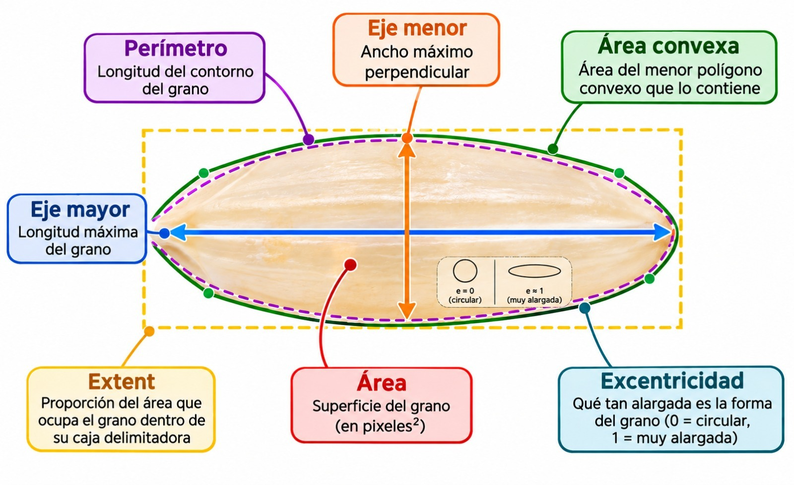
img/grano_morfologia.pngPega aquí la captura
| Variable | Descripción | Qué parte del grano mide |
|---|---|---|
| Area | Número de píxeles dentro de los límites del grano. | Superficie total. |
| Perimeter | Distancia calculada alrededor del contorno del grano. | Borde exterior. |
| Major_Axis_Length | Longitud del eje mayor. | Largo máximo. |
| Minor_Axis_Length | Longitud del eje menor. | Ancho máximo. |
| Eccentricity | Forma de la elipse con los mismos momentos que el grano. | Qué tan alargado es. |
| Convex_Area | Píxeles de la envolvente convexa del grano. | Superficie con el contorno “rellenado”. |
| Extent | Razón entre el área del grano y el área del rectángulo que lo contiene. | Qué tanto llena su caja contenedora. |
| Class | Variedad del grano: Cammeo u Osmancik. | Variable objetivo. |
Fuentes del conjunto de datos. UCI Machine Learning Repository: archive.ics.uci.edu/dataset/545/rice. La descripción y solicitud de citación identifican a Ilkay Cinar y Murat Koklu como autores del trabajo asociado.
5. Fundamento matemático
El fundamento matemático no se concentra en una sola sección: cada principio se presenta inmediatamente antes del paso del tutorial donde se aplica, para que la teoría y el código se lean juntos. En cada paso aparece como un menú desplegable «Fundamento matemático». La siguiente tabla indica dónde encontrar cada uno.
| Principio | Dónde se presenta | Dónde se aplica en el código |
|---|---|---|
| Prueba de hipótesis y tamaño del efecto | Paso 2.3 | f_oneway, ttest_ind, d de Cohen. |
| Notación y clasificación binaria | Paso 3 | Definición de X, y y del umbral. |
| Validación (partición de prueba) | Paso 3 | train_test_split. |
| Estandarización | Paso 4 | StandardScaler. |
| Regresión logística | Paso 4 | LogisticRegression. |
| Naive Bayes gaussiano | Paso 4 | GaussianNB. |
| Justificación de los métodos | Paso 4 | Elección de ambos clasificadores. |
| ROC y AUC | Paso 6 | roc_curve, roc_auc_score. |
| Validación cruzada y brecha Δ | Paso 6.1 | cross_val_score. |
| Precisión promedio (AP) | Paso 6.2 | precision_recall_curve, average_precision_score. |
| Matriz de confusión, precisión, recall y F1 | Paso 6.3 | confusion_matrix, precision_score, recall_score, f1_score. |
| Calibración y reglas de puntuación | Paso 7 | calibration_curve, brier_score_loss, log_loss. |
| Recalibración: Platt e isotónica | Paso 8 | CalibratedClassifierCV. |
Código y salidas: etapas del procedimiento
El código de los pasos siguientes es funcional, está documentado línea por línea y es reproducible. La Tabla 4 resume qué se hace en cada etapa.
| Etapa | Pasos | Qué se hace y qué salidas se obtienen |
|---|---|---|
| Preparación de datos | 0 a 3 | Instalación, carga del ARFF, exploración (tablas, histogramas, cajas, correlación), prueba de hipótesis y partición estratificada 70/30. |
| Entrenamiento | 4 y 5 | Pipeline con StandardScaler y regresión logística; Naive Bayes; exactitud y probabilidades predict_proba. |
| Validación | 6.1 y 8 | Validación cruzada de 5 pliegues, comparación de AUC en entrenamiento, validación y prueba, y calibración con validación cruzada. |
| Evaluación | 6 a 8 | ROC y AUC, curva Precisión-Recall, matriz de confusión, precisión y recall, Brier, log-loss, diagramas de confiabilidad y comparación antes y después de recalibrar. |
Se fija random_state=42 en la partición y en la validación cruzada, y el Paso 1 imprime las versiones de Python y de las bibliotecas; anótalas en tu reporte.
Todas las gráficas se guardan dentro de la carpeta figuras/ con fig.savefig("figuras/<nombre>.png"). En esta página las imágenes se leen de la carpeta img/ con exactamente ese nombre (ver el Apéndice A). Las tablas y salidas de texto (salida_*) se capturan de la celda y se guardan con el nombre indicado.
Paso 0. Preparación del entorno
- Crea una carpeta de trabajo, por ejemplo
tutorial_rice. - Descarga el archivo
Rice_Cammeo_Osmancik.arffdesde UCI. - Coloca el archivo ARFF y el notebook en la misma carpeta.
- Abre Jupyter Notebook o JupyterLab.
Si alguna biblioteca no está instalada, ejecuta en una celda:
# Instala las librerías necesarias (ejecuta solo si te falta alguna).
# %pip = pip dentro de Jupyter, instala en el mismo entorno del notebook.
%pip install pandas numpy scipy scikit-learn matplotlibEl paquete se instala con el nombre scikit-learn, pero se importa mediante el espacio de nombres sklearn. Si las bibliotecas ya están instaladas, no es necesario ejecutar la instalación.
Paso 1. Importar librerías y cargar los datos
El archivo se encuentra en formato ARFF. Por ello se utiliza scipy.io.arff.loadarff en lugar de pandas.read_csv. Cada línea del bloque de importaciones incluye un comentario con la función de la librería y, en las más importantes, cómo se usará.
import os # os: funciones del sistema operativo; aquí crea la carpeta de figuras
import numpy as np # numpy: cálculo numérico (raíces, promedios, arreglos)
import pandas as pd # pandas: tablas (DataFrame) para cargar y manipular datos
from scipy.io import arff # scipy.io.arff: lee archivos .arff (formato de Weka/UCI)
import matplotlib.pyplot as plt # matplotlib.pyplot: dibuja gráficas (histogramas, curvas, etc.)
# scipy.stats.f_oneway: PRUEBA F (ANOVA de un factor). Compara las MEDIAS de 2 o más grupos.
# Uso: F, p = f_oneway(grupo_A, grupo_B) -> devuelve el estadístico F y el valor p.
# Si p < 0.05 se concluye que las medias de los grupos son estadísticamente distintas.
from scipy.stats import f_oneway
# scipy.stats.ttest_ind: prueba t de dos muestras; con equal_var=False es la versión de Welch (no exige varianzas iguales).
from scipy.stats import ttest_ind
# train_test_split: divide los datos en entrenamiento y prueba.
# StratifiedKFold: validación cruzada que conserva la proporción de clases en cada pliegue.
# cross_val_score: entrena y evalúa un modelo en cada pliegue y devuelve las métricas.
from sklearn.model_selection import train_test_split, StratifiedKFold, cross_val_score
from sklearn.pipeline import make_pipeline # make_pipeline: encadena pasos (escalar -> modelo) en un solo objeto
from sklearn.preprocessing import StandardScaler # StandardScaler: estandariza (media 0, desviación 1) cada variable
from sklearn.linear_model import LogisticRegression # LogisticRegression: clasificador lineal con salida sigmoide (probabilidad)
from sklearn.naive_bayes import GaussianNB # GaussianNB: Naive Bayes que asume variables normales dentro de cada clase
from sklearn.metrics import (
roc_curve, # roc_curve: calcula FPR y TPR para cada umbral de decisión
roc_auc_score, # roc_auc_score: área bajo la curva ROC (discriminación)
brier_score_loss, # brier_score_loss: error cuadrático medio entre probabilidad y etiqueta (menor = mejor)
log_loss, # log_loss: pérdida logarítmica; castiga probabilidades muy seguras pero equivocadas
precision_recall_curve, # precision_recall_curve: curva Precisión-Recall (útil con clases desbalanceadas)
average_precision_score, # average_precision_score: precisión promedio (AP), resumen escalonado de la curva Precisión-Recall
confusion_matrix, # confusion_matrix: Construye la tabla de conteo de aciertos y errore
precision_score, # precision_score: Indica qué proporción de los elementos clasificados como positivos realmente lo son
recall_score, # recall_score: Indica qué proporción de los positivos reales logró detectar el modelo
f1_score # f1_score: Calcula la media armónica entre precision y recall, resumiendo ambos errores en una sola métrica balanceada.
)
from sklearn.calibration import (
calibration_curve, # calibration_curve: puntos del diagrama de confiabilidad (predicho vs. observado)
CalibratedClassifierCV, # CalibratedClassifierCV: recalibra un clasificador (Platt o isotónica) con validación cruzada
)
# Estilo global de las gráficas.
plt.rcParams.update({
"figure.dpi": 110, # resolución de las figuras
"axes.grid": True, # muestra cuadrícula
"grid.alpha": 0.3, # transparencia de la cuadrícula
})
# Carpeta donde se guardarán TODAS las imágenes del tutorial (si ya existe, no hace nada).
os.makedirs("figuras", exist_ok=True)
# Versiones utilizadas: anótalas en el reporte para que el análisis sea reproducible.
import sys, sklearn, scipy, matplotlib
print("Python", sys.version.split()[0], "| numpy", np.__version__, "| pandas", pd.__version__,
"| scipy", scipy.__version__, "| scikit-learn", sklearn.__version__, "| matplotlib", matplotlib.__version__)RUTA_ARFF = "Rice_Cammeo_Osmancik.arff" # [EDITABLE] ruta del archivo (si no está en la misma carpeta, pon la ruta completa)
datos, meta = arff.loadarff(RUTA_ARFF) # lee el ARFF: 'datos' = filas, 'meta' = descripción de columnas
df = pd.DataFrame(datos) # convierte las filas a un DataFrame de pandas
df["Class"] = df["Class"].str.decode("utf-8") # las etiquetas llegan como bytes (b'Cammeo'); se pasan a texto
print(df.shape) # (filas, columnas): esperado (3810, 8)
df.head() # primeras 5 filas para verificar que la carga fue correcta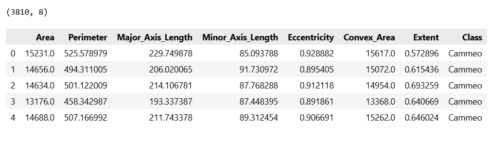
img/Salida_01_carga.pngPega aquí la captura
La dimensión observada es (3810, 8): 3 810 filas y ocho columnas (siete predictoras y una variable objetivo).
Para contar los granos por variedad y visualizar el balance de clases:
conteo = df["Class"].value_counts() # cuenta cuántos granos hay de cada variedad
fig, ax = plt.subplots(figsize=(5, 3.6)) # crea la figura y el eje
barras = ax.bar(conteo.index, conteo.values, # barras: x = variedad, altura = número de granos
color=["#4C72B0", "#DD8452"]) # azul y naranja
for barra, valor in zip(barras, conteo.values): # recorre cada barra para escribirle su etiqueta
ax.text(barra.get_x() + barra.get_width() / 2, # posición x: centro de la barra
valor + 25, # posición y: un poco arriba de la barra
f"{valor:,} ({valor / len(df):.1%})", # texto: cantidad y porcentaje
ha="center") # alineación horizontal centrada
ax.set_ylabel("Número de granos") # etiqueta del eje y
ax.set_title("Granos por variedad") # título
ax.set_ylim(0, conteo.max() * 1.15) # deja espacio arriba para los textos
ax.grid(axis="x", visible=False) # quita la cuadrícula vertical
plt.tight_layout() # ajusta márgenes
fig.savefig("figuras/distribucion_variables.png", dpi=300, bbox_inches="tight") # Guarda la imagen
plt.show() # muestra la figura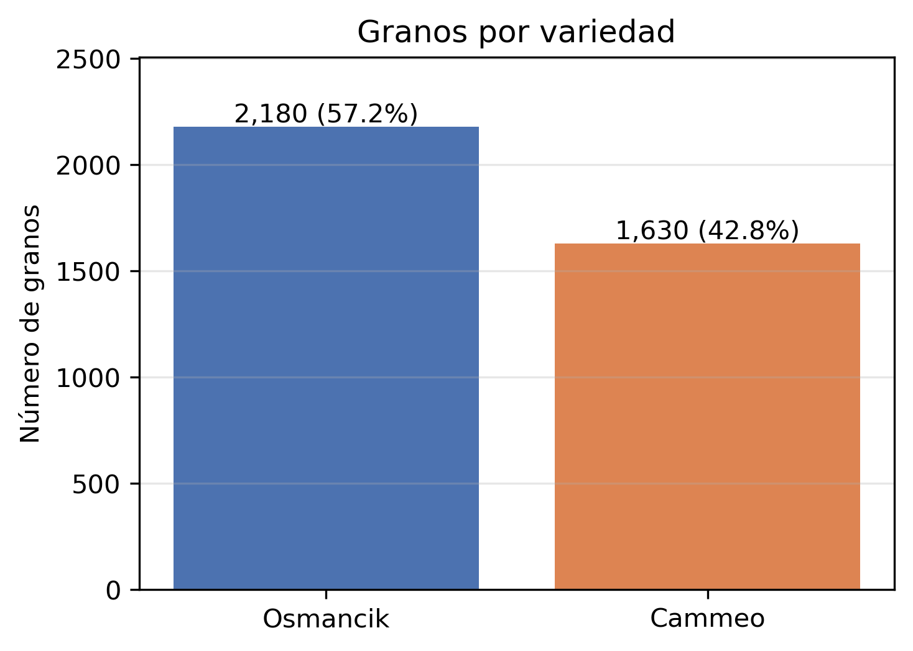
img/distribucion_variables.pngPega aquí la captura
| Clase | Granos | Porcentaje |
|---|---|---|
| Osmancik | 2 180 | 57.2 % |
| Cammeo | 1 630 | 42.8 % |
| Total | 3 810 | 100 % |
Las clases están razonablemente balanceadas (57.2 % frente a 42.8 %): no es un desbalance fuerte, por lo que no se necesita remuestreo.
Paso 2. Explorar los datos
Antes de entrenar los modelos se revisan tipos de datos, valores faltantes, filas duplicadas, estadísticos descriptivos, distribuciones y correlaciones. Esta exploración es descriptiva: no se usa para seleccionar variables ni para ajustar modelos. Las estadísticas descriptivas, las gráficas y las pruebas de hipótesis se calculan con las 3 810 observaciones; la partición del Paso 3 es la que aísla el conjunto de prueba de todo ajuste.
df.info() # tipos de dato y no-nulos por columna
print("Valores faltantes:", df.isna().sum().sum()) # total de celdas vacías (esperado: 0)
print("Filas duplicadas:", df.duplicated().sum()) # filas repetidas (esperado: 0)
vars_num = [c for c in df.columns if c != "Class"] # lista de las 7 variables numéricas (todas menos la etiqueta)
df[vars_num].describe().round(3) # media, desviación, mínimo, cuartiles y máximo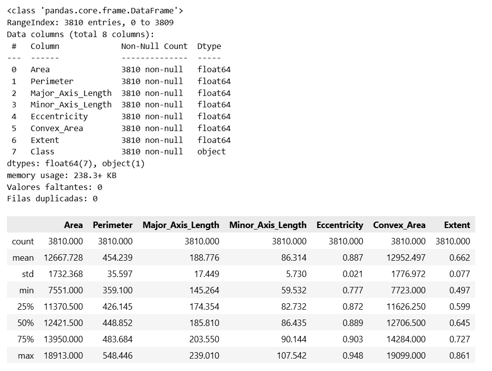
img/salida_02_info_describe.pngPega aquí la captura
La inspección muestra 3 810 observaciones completas, siete variables numéricas y una categórica. En la ejecución del notebook se obtuvieron cero valores faltantes y cero filas duplicadas.
2.1. Distribuciones por variedad
Los histogramas permiten comparar la distribución de cada característica entre Cammeo y Osmancik.
colores = {"Cammeo": "#DD8452", "Osmancik": "#4C72B0"} # color fijo por clase (se reutiliza en varias gráficas)
fig, axes = plt.subplots(2, 4, figsize=(16, 7)) # rejilla de 2x4 (7 variables + 1 hueco)
for ax, variable in zip(axes.ravel(), vars_num): # un eje por variable
for clase, color in colores.items(): # dibuja un histograma por clase en el mismo eje
ax.hist(df.loc[df["Class"] == clase, variable], # valores de esa variable solo para esa clase
bins=30, alpha=0.65, # 30 barras; transparencia para ver el traslape
color=color, label=clase)
ax.set_title(variable) # título = nombre de la variable
axes.ravel()[0].legend() # leyenda solo en el primer eje
axes.ravel()[-1].axis("off") # apaga el 8.º eje (sobra)
fig.suptitle("Distribución de cada variable por variedad") # título general
fig.tight_layout()
fig.savefig("figuras/fig_histogramas.png", dpi=300, bbox_inches="tight") # Guarda la imagen
plt.show()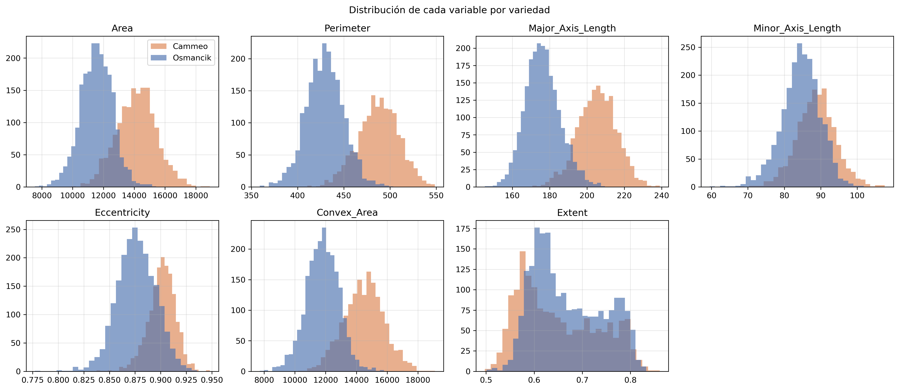
img/fig_histogramas.pngPega aquí la captura
Area, Perimeter, Major_Axis_Length y Convex_Area separan bastante bien las variedades; Eccentricity y Minor_Axis_Length muestran un traslape moderado y Extent se traslapa casi por completo. La gráfica por sí sola no basta para afirmar si las medias difieren ni qué tanto: eso se comprueba en el Paso 2.3.
2.2. Diagramas de caja y correlaciones
Los diagramas de caja permiten comparar medianas, dispersión y valores atípicos. La matriz de correlación muestra la asociación lineal entre las variables numéricas.
fig, axes = plt.subplots(2, 4, figsize=(16, 7))
for ax, variable in zip(axes.ravel(), vars_num):
cajas = ax.boxplot([df.loc[df["Class"] == c, variable] for c in colores], # una caja por clase
patch_artist=True) # permite colorear el relleno
for caja, color in zip(cajas["boxes"], colores.values()): # colorea cada caja
caja.set_facecolor(color)
caja.set_alpha(0.7)
ax.set_xticks([1, 2]) # posiciones de las etiquetas del eje x
ax.set_xticklabels(list(colores)) # nombres de las clases
ax.set_title(variable)
axes.ravel()[-1].axis("off")
fig.tight_layout()
fig.savefig("figuras/fig_boxplot.png", dpi=300, bbox_inches="tight") # Guarda la imagen
plt.show()
corr = df[vars_num].corr() # matriz de correlación de Pearson entre las 7 variables
fig, ax = plt.subplots(figsize=(6.5, 5.5))
im = ax.imshow(corr, cmap="coolwarm", vmin=-1, vmax=1) # mapa de calor: rojo = correlación positiva, azul = negativa
ax.set_xticks(range(len(corr))); ax.set_xticklabels(corr.columns, rotation=45, ha="right")
ax.set_yticks(range(len(corr))); ax.set_yticklabels(corr.columns)
for i in range(len(corr)): # escribe el valor numérico en cada celda
for j in range(len(corr)):
ax.text(j, i, f"{corr.iloc[i, j]:.2f}", ha="center", va="center", fontsize=8)
ax.grid(False)
fig.colorbar(im, ax=ax, shrink=0.8) # barra de color de referencia
ax.set_title("Correlación entre las variables")
fig.tight_layout()
fig.savefig("figuras/fig_correlacion.png", dpi=300, bbox_inches="tight") # Guarda la imagen
plt.show()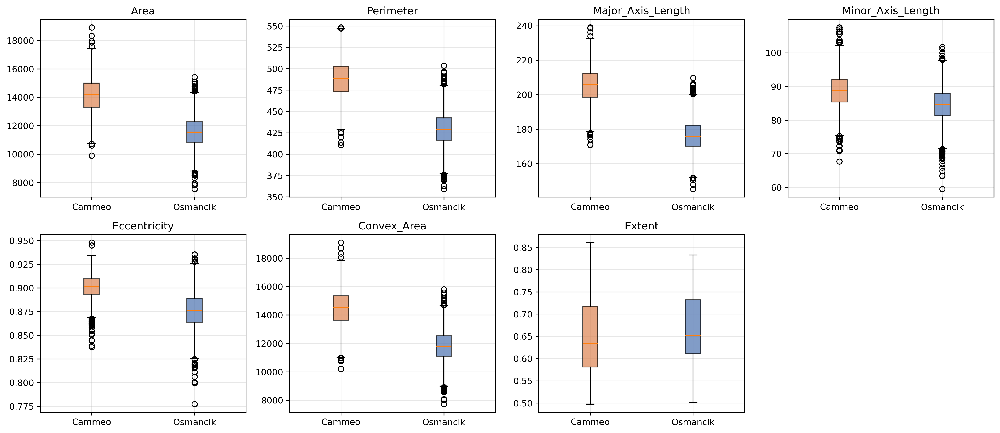
img/fig_boxplot.pngPega aquí la captura
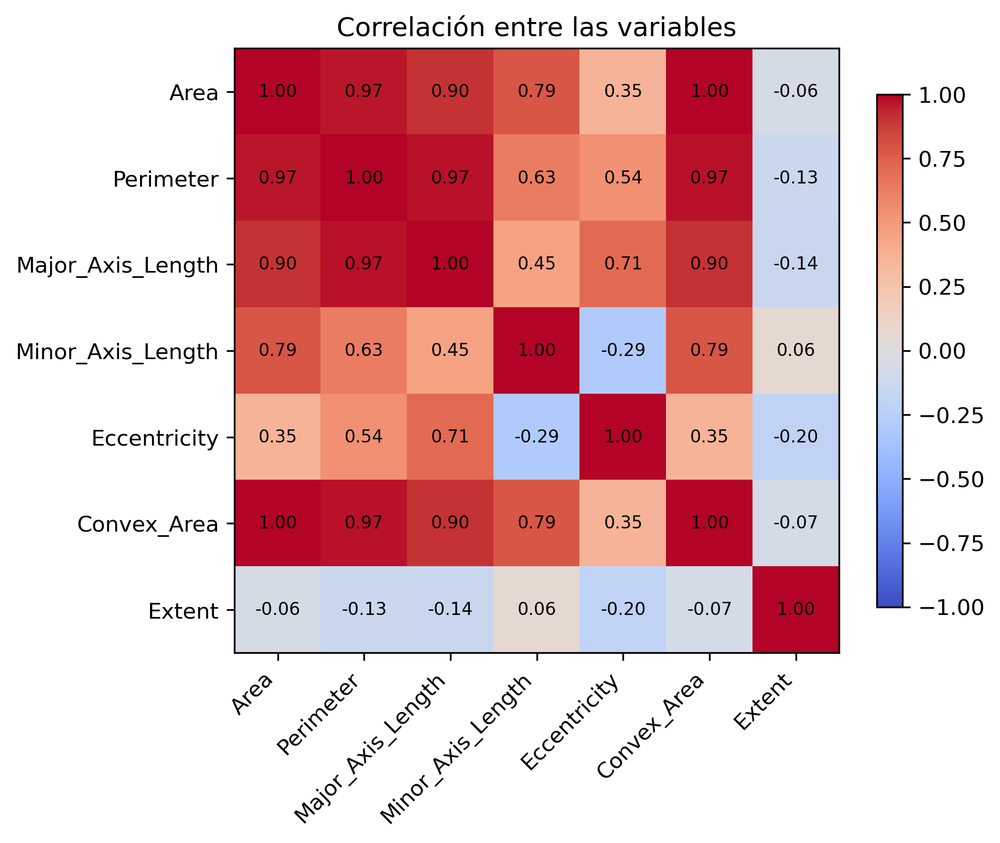
img/fig_correlacion.pngPega aquí la captura
Area, Perimeter, Major_Axis_Length y Convex_Area presentan correlaciones elevadas entre sí (aproximadamente de 0.90 a 1.00). Esto puede dificultar la interpretación individual de los coeficientes de la regresión logística y contrasta con el supuesto de independencia condicional de Naive Bayes. Extent casi no se correlaciona con las demás (entre −0.20 y 0.06).
2.3. Prueba de hipótesis: ¿las medias de Cammeo y Osmancik son distintas?
¿Qué es? Una prueba de hipótesis es un procedimiento estadístico para decidir si una diferencia observada en la muestra es real o puede deberse solo al azar. Aquí se compara, variable por variable, la media de los granos Cammeo contra la de los Osmancik.
Hipótesis. \(H_0\) (nula): la media de la variable es igual en las dos variedades. \(H_1\) (alternativa): la media es distinta.
Prueba utilizada. Prueba F de Fisher [12] (ANOVA de un factor, scipy.stats.f_oneway). Con dos grupos equivale a una t de Student de varianza agrupada (\(F=t^2\)). Como comprobación se agrega la t de Welch, que no exige varianzas iguales [6,16]. El procedimiento compara las medias muestrales y calcula un valor \(p_{\mathrm{val}}\) que se contrasta con el nivel de significancia \(\alpha=0.05\).
Para cada variable se compara la media de los dos grupos (\(g=1\) Cammeo, \(g=2\) Osmancik; \(G=2\), \(n=3\,810\)). El estadístico F de Fisher (f_oneway) es
que, bajo \(H_0\) (medias iguales) y con observaciones independientes, errores normales y varianzas iguales entre grupos (homocedasticidad), sigue una distribución \(F_{G-1,\,n-G}\); con dos grupos \(F=t^2\), donde \(t\) es la t de Student de varianza agrupada. La t de Welch [6] (ttest_ind con equal_var=False) no exige homocedasticidad:
donde \(s_g\) es la desviación estándar muestral (divisor \(n_g-1\)) y \(\nu\) son los grados de libertad de Welch–Satterthwaite. El tamaño del efecto d de Cohen [7] (variable d del código) es
Con \(m=7\) pruebas simultáneas, la corrección de Bonferroni [13] (variable ALFA_BONF) rechaza \(H_0\) solo si \(p_{\mathrm{val}}<\alpha/m\) y controla la tasa de error por familia (\(\mathrm{FWER}\le\alpha\)) sin exigir independencia entre las pruebas; el procedimiento de Holm [14] da el mismo control con mayor potencia.
| Resultado | Lectura |
|---|---|
| \(p_{\mathrm{val}}<0.05\) | Hay evidencia estadística para rechazar H₀: las medias son distintas. |
| \(p_{\mathrm{val}}\ge0.05\) | No hay evidencia suficiente para afirmar que difieren (no significa que sean iguales). |
| F grande | Mayor diferencia entre grupos en relación con la variabilidad dentro de ellos. |
| d de Cohen | Tamaño del efecto: ≈ 0.2 pequeño, ≈ 0.5 mediano, ≥ 0.8 grande. |
¿Cómo tratar los resultados?
- Significativo no es lo mismo que útil para clasificar. Con 3 810 granos, diferencias pequeñas resultan significativas. Revisa siempre el tamaño del efecto d y el traslape en el diagrama de caja.
- Una variable con \(p_{\mathrm{val}}<0.05\) pero d pequeño aporta poco para separar las clases; una con d grande es una candidata fuerte.
- Al probar \(m=7\) variables a la vez aumenta el riesgo de falsos positivos. La corrección de Bonferroni rechaza \(H_0\) solo si \(p_{\mathrm{val}}<\alpha/m\approx0.0071\) y controla la tasa de error por familia (\(\mathrm{FWER}\le\alpha\)) sin exigir independencia; el procedimiento de Holm da el mismo control con mayor potencia.
- Si \(p_{\mathrm{val}}\ge0.05\), no elimines la variable automáticamente: puede aportar en combinación con otras. Justifica la decisión con el desempeño del modelo en validación, nunca en prueba.
- Supuestos: observaciones independientes, normalidad aproximada (razonable con n grande por el teorema central del límite) y, para la prueba F clásica, homocedasticidad; la t de Welch relaja esta última. Si hay dudas sobre la normalidad, la prueba de Mann-Whitney (
scipy.stats.mannwhitneyu) es una alternativa no paramétrica, pero contrasta dominancia estocástica y no medias, por lo que cambia la hipótesis nula.
ALFA = 0.05 # [EDITABLE] nivel de significancia (probabilidad aceptada de rechazar H0 siendo cierta)
ALFA_BONF = ALFA / len(vars_num) # corrección de Bonferroni: divide alfa entre el número de pruebas (7)
P_MIN = 1e-300 # el computador no representa valores p menores; se reportan como p <= 1e-300 (no como 0)
filas = []
for v in vars_num: # repite la prueba para cada variable
cam = df.loc[df["Class"] == "Cammeo", v] # valores de la variable en granos Cammeo
osm = df.loc[df["Class"] == "Osmancik", v] # valores de la variable en granos Osmancik
F, p = f_oneway(cam, osm) # prueba F de Fisher: devuelve estadístico F y valor p
_, p_welch = ttest_ind(cam, osm, equal_var=False) # t de Welch: devuelve (t, p); solo guardamos p
p, p_welch = max(p, P_MIN), max(p_welch, P_MIN) # evita mostrar p = 0.00e+00
# d de Cohen = (media1 - media2) / desviación combinada -> tamaño del efecto
sp = np.sqrt(((len(cam) - 1) * cam.var() + (len(osm) - 1) * osm.var()) / (len(cam) + len(osm) - 2))
d = (cam.mean() - osm.mean()) / sp
filas.append({
"Variable": v,
"Media Cammeo": cam.mean(),
"Media Osmancik": osm.mean(),
"F": F,
"p (F)": p,
"p (Welch)": p_welch,
"d de Cohen": d,
"¿Difieren? (p<0.05)": "Sí" if p < ALFA else "No",
"¿Difieren? (Bonferroni)": "Sí" if p < ALFA_BONF else "No",
})
tabla_hip = pd.DataFrame(filas).set_index("Variable")
tabla_hip.round({"Media Cammeo": 3, "Media Osmancik": 3, "F": 1, "d de Cohen": 2}).style.format({"p (F)": "{:.2e}", "p (Welch)": "{:.2e}"})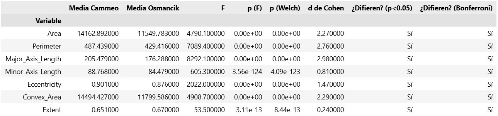
img/salida_hipotesis_tabla.pngPega aquí la captura
Las siete variables rechazan \(H_0\), tanto con \(\alpha=0.05\) como con Bonferroni (\(\alpha/m\approx0.0071\)): las medias de Cammeo y Osmancik difieren en todas. Los valores \(p_{\mathrm{val}}\) que el computador redondea a cero se reportan como \(p_{\mathrm{val}}\le10^{-300}\) (en la salida, \(1.00\times10^{-300}\)). Lo que distingue a las variables es el tamaño del efecto:
- Efecto grande (|d| ≥ 0.8): Major_Axis_Length (d = 2.98), Perimeter (2.76), Convex_Area (2.29), Area (2.27), Eccentricity (1.47) y Minor_Axis_Length (0.81, apenas por encima del umbral, con \(p_{\mathrm{val}}\) ≈ 10−124).
- Efecto pequeño: Extent (|d| = 0.24, \(p_{\mathrm{val}}\) ≈ 3×10−13), con medias de 0.651 (Cammeo) y 0.670 (Osmancik). Es significativa por el tamaño de la muestra, pero por sí sola separa mal las variedades.
Para cada variable escribe: “\(p_{\mathrm{val}}\) = …, d = …: las medias (sí / no) difieren”. Si su \(p_{\mathrm{val}}\) es pequeño pero su d es bajo, la diferencia es real pero pequeña.
Paso 3. Dividir en entrenamiento y prueba
Se define Cammeo como clase positiva (1) y Osmancik como clase negativa (0). El 70 % de las observaciones se destina a entrenamiento y el 30 % a prueba.
Notación. Hay \(n\) granos; \(x_i=(x_{i1},\ldots,x_{i7})\) es el vector de las siete variables predictoras del grano \(i\) (X) y \(y_i\in\{0,1\}\) su clase (y; 1 = Cammeo, 0 = Osmancik).
Notación global. \(n\): total de granos (\(3\,810\)); \(n_{\text{ent}}\) y \(n_{\text{prueba}}\): tamaños de los conjuntos de entrenamiento y de prueba; \(G\): número de grupos; \(m\): número de pruebas simultáneas; \(c\in\{0,1\}\): índice de clase; \(K\): número de pliegues de validación cruzada; \(B_b\) (\(b=1,\ldots,B\)): grupos del diagrama de confiabilidad; \(s_g\): desviación estándar muestral (divisor \(n_g-1\)); \(\hat\sigma_j\): desviación estándar con divisor \(n_{\text{ent}}\); \(p_{\mathrm{val}}\): valor \(p\) de una prueba; \(p(x)\): probabilidad estimada; \(q(x)\): puntuación del clasificador (la probabilidad estimada o su logit, según el contexto); \(z=z(x)\): variables estandarizadas.
Planteamiento. Se estima la probabilidad condicional \(p(x)=P(Y=1\mid X=x)\) y se decide la clase comparándola con un umbral \(\tau\) (0.5 salvo que se indique otro):
\[\hat y(x)=\mathbb 1\{\,p(x)\ge\tau\,\}.\]Evaluar \(p(x)\) implica dos preguntas distintas: si ordena bien los casos (discriminación) y si sus valores coinciden con las frecuencias reales (calibración).
Validación. Se separa una muestra de prueba (30 %) que no participa en ningún ajuste: escalador, modelos y calibradores se ajustan solo con el 70 % restante. La estratificación conserva en ambos conjuntos la proporción de la clase positiva.
y = (df["Class"] == "Cammeo").astype(int) # variable objetivo: 1 si es Cammeo, 0 si es Osmancik
X = df.drop(columns="Class") # variables predictoras: las 7 medidas del grano
X_train, X_test, y_train, y_test = train_test_split(
X, y,
test_size=0.30, # [EDITABLE] proporción para prueba (30 %)
stratify=y, # conserva la proporción de clases en ambos conjuntos
random_state=42, # [EDITABLE] semilla; con el mismo valor la partición es reproducible
)
print("Entrenamiento:", X_train.shape) # esperado (2667, 7)
print("Prueba:", X_test.shape) # esperado (1143, 7)
print("Proporción Cammeo train:", round(y_train.mean(), 4)) # ≈ 0.4278
print("Proporción Cammeo test:", round(y_test.mean(), 4)) # ≈ 0.4278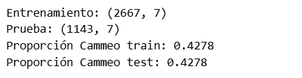
img/salida_particion.pngPega aquí la captura
Entrenamiento: 2 667 observaciones y siete variables. Prueba: 1 143 observaciones y siete variables. Proporción de Cammeo en ambos conjuntos: 0.4278.
El parámetro stratify=y conserva aproximadamente la proporción de las clases en ambos subconjuntos. random_state=42 permite reproducir la misma partición.
Paso 4. Entrenar los modelos
Se comparan dos clasificadores: regresión logística y Naive Bayes gaussiano.
Las variables tienen escalas muy distintas (el área es del orden de \(10^4\) y la excentricidad de 0.9). Cada variable se transforma con
\[z_{ij}=\frac{x_{ij}-\bar x_j}{\hat\sigma_j},\qquad \bar x_j=\frac1{n_{\text{ent}}}\sum_i x_{ij},\qquad \hat\sigma_j=\sqrt{\frac1{n_{\text{ent}}}\sum_i (x_{ij}-\bar x_j)^2},\]donde \(\bar x_j\) y \(\hat\sigma_j\) son la media y la desviación estándar (con divisor \(n_{\text{ent}}\), como hace StandardScaler) de la variable \(j\) calculadas solo con los datos de entrenamiento, para no filtrar información de la prueba. Por eso el escalador va dentro del Pipeline.
Modela la probabilidad de la clase positiva con la función sigmoide \(\sigma(u)=1/(1+e^{-u})\) [4,5,15]:
\[p(x)=P(Y=1\mid X=x)=\sigma(\beta_0+\beta^\top z)=\frac1{1+e^{-(\beta_0+\beta^\top z)}},\qquad \ln\frac{p(x)}{1-p(x)}=\beta_0+\beta^\top z,\]donde \(\beta_0\) es el intercepto, \(\beta\in\mathbb R^7\) el vector de coeficientes y \(z=z(x)\) las variables estandarizadas. Los parámetros se estiman minimizando la pérdida logarítmica con una penalización L2 (valor por defecto de scikit-learn, \(C=1\)):
\[\min_{\beta_0,\beta}\ \tfrac12\lVert\beta\rVert_2^2+C\sum_{i=1}^{n_{\text{ent}}}\big[-y_i\ln p_i-(1-y_i)\ln(1-p_i)\big],\qquad p_i=\sigma(\beta_0+\beta^\top z_i).\]donde \(C>0\) es el inverso de la fuerza de regularización: un \(C\) menor penaliza más a \(\beta\), y un \(C\) mayor se acerca a la verosimilitud sin penalización. El intercepto \(\beta_0\) no se penaliza. El segundo término es el negativo de la log-verosimilitud y el primero estabiliza los coeficientes cuando las variables están correlacionadas. No existe solución cerrada, por lo que se usa un optimizador iterativo (max_iter=1000) [4,5].
Aplica el teorema de Bayes,
\[P(Y=c\mid x)=\frac{P(Y=c)\,P(x\mid Y=c)}{\sum_{c'\in\{0,1\}}P(Y=c')\,P(x\mid Y=c')},\]con dos supuestos: las variables son condicionalmente independientes dada la clase y, dentro de cada clase, siguen una distribución normal:
\[P(x\mid Y=c)=\prod_{j=1}^{7}\mathcal N\!\left(x_j;\mu_{jc},\sigma_{jc}^2\right),\qquad \mathcal N(x;\mu,\sigma^2)=\frac1{\sqrt{2\pi\sigma^2}}\exp\!\left(-\frac{(x-\mu)^2}{2\sigma^2}\right).\]Los parámetros \(\mu_{jc}\) y \(\sigma^2_{jc}\) son la media y la varianza de la variable \(j\) en la clase \(c\), y \(P(Y=c)\) es la frecuencia de la clase en el entrenamiento. GaussianNB suma a las varianzas una constante pequeña (var_smoothing) para garantizar \(\sigma_{jc}^2>0\). Tomando la razón de momios posterior,
La suma trata cada variable como evidencia independiente. En este conjunto las variables de tamaño están muy correlacionadas (0.90 a 1.00), de modo que el supuesto de independencia no se cumple: la misma evidencia se cuenta varias veces, el logit se infla y las probabilidades tienden a quedar pegadas a 0 y a 1 (sobreconfianza), aunque el orden de las puntuaciones, y por tanto el AUC, pueda conservarse [4,22]. Esto anticipa lo que se observa en el Paso 7.
| Característica del problema | Por qué el método es adecuado |
|---|---|
| Variable objetivo binaria | Ambos son clasificadores binarios: la regresión logística modela directamente \(P(Y=1\mid x)\) y Naive Bayes la obtiene con Bayes. |
| Se necesitan probabilidades, no solo clases | Los dos entregan predict_proba, que permite evaluar ROC y calibración. |
| Predictoras numéricas continuas y completas | Se estandarizan o se modelan con densidades normales; no requieren imputación ni codificación. |
| Variables muy correlacionadas | La penalización L2 de la regresión logística las tolera; Naive Bayes viola su supuesto y sirve de contraste para ver el efecto sobre la calibración. |
| Tamaño moderado (3 810 granos) | Son modelos ligeros y de baja varianza, que permiten validación cruzada rápida. |
| Comparar discriminación y calibración | Dos modelos con AUC alto pero probabilidades de calidad distinta hacen visible la diferencia; Platt e isotónica son los remedios habituales. |
modelos = {
# Pipeline = escalar y luego clasificar. El escalador aprende media y desviación SOLO con X_train
# (evita fuga de información hacia la prueba).
"Regresión logística": make_pipeline(
StandardScaler(), # paso 1: estandariza las variables
LogisticRegression(max_iter=1000), # paso 2: regresión logística; max_iter = iteraciones máximas del optimizador
),
"Naive Bayes": GaussianNB(), # no necesita escalado: modela cada variable con una normal por clase
}
for nombre, modelo in modelos.items():
modelo.fit(X_train, y_train) # entrena el modelo con los datos de entrenamiento
print(f"{nombre}: exactitud en prueba = {modelo.score(X_test, y_test):.4f}") # score = exactitud (accuracy)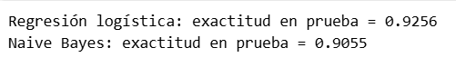
img/salida_exactitud.pngPega aquí la captura
| Modelo | Exactitud |
|---|---|
| Regresión logística | 0.9256 |
| Naive Bayes | 0.9055 |
El escalador está dentro de un Pipeline. Así, StandardScaler aprende sus parámetros únicamente con X_train; el conjunto de prueba se transforma con esos parámetros. Esto evita que la información de prueba se filtre al preprocesamiento.
Paso 5. Obtener probabilidades
La evaluación ROC y la calibración requieren probabilidades, no solamente etiquetas. predict_proba devuelve una columna por clase; aquí la columna de Cammeo es la segunda porque se codificó como 1.
probs = {nombre: modelo.predict_proba(X_test)[:, 1] # P(Cammeo) de cada grano de prueba
for nombre, modelo in modelos.items()}
print("Orden de las clases:", modelos["Naive Bayes"].classes_) # [0 1] -> la columna 1 es Cammeo
pd.DataFrame({
"Clase real (1 = Cammeo)": y_test.values[:8], # etiqueta real de los primeros 8 granos
**{nombre: p[:8].round(4) for nombre, p in probs.items()}, # probabilidad de cada modelo
})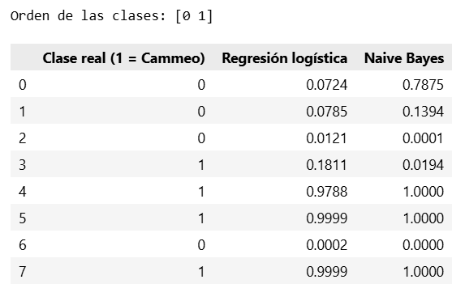
img/salida_probabilidades.pngPega aquí la captura
| Grano | Clase real | Reg. logística | Naive Bayes |
|---|---|---|---|
| 1 | 0 | 0.0724 | 0.7875 |
| 2 | 0 | 0.0785 | 0.1394 |
| 3 | 0 | 0.0121 | 0.0001 |
| 4 | 1 | 0.1811 | 0.0194 |
| 5 | 1 | 0.9788 | 1.0000 |
| 6 | 1 | 0.9999 | 1.0000 |
| 7 | 0 | 0.0002 | 0.0000 |
| 8 | 1 | 0.9999 | 1.0000 |
Cada valor representa la probabilidad estimada de que el grano sea Cammeo. Una probabilidad de 0.80 no es una clase definitiva: expresa el grado de confianza del modelo. Ambos modelos pueden asignar probabilidades distintas al mismo grano aunque después produzcan etiquetas iguales o diferentes al aplicar un umbral. Por ejemplo, el grano 1 (Osmancik) recibe 0.0724 de la regresión logística (acierto) y 0.7875 de Naive Bayes (error), y el grano 4 (Cammeo) recibe probabilidades bajas de ambos modelos (error), mucho más extrema la de Naive Bayes (0.0194).
Paso 6. Curva ROC y AUC: discriminación
La curva ROC representa la tasa de verdaderos positivos frente a la tasa de falsos positivos para distintos umbrales de decisión:
\[\mathrm{TPR}=\frac{VP}{VP+FN},\qquad \mathrm{FPR}=\frac{FP}{FP+VN}.\]TPR (sensibilidad): de los Cammeo reales, qué proporción se detecta. FPR: de los Osmancik reales, qué proporción se marca por error como Cammeo. Cada punto de la curva corresponde a un umbral distinto, y cada modelo genera una curva completa.
El área bajo la curva (AUC) resume la capacidad de discriminación. Una interpretación equivalente [8,17] es la probabilidad de que un grano Cammeo (\(X_+\)) reciba una puntuación mayor que un Osmancik (\(X_-\)) elegidos al azar, con medio crédito en caso de empate (ecuación siguiente). Un AUC de 1 es un orden perfecto y 0.5 equivale al azar.
La curva ROC es el conjunto de puntos \(\big(\mathrm{FPR}(\tau),\mathrm{TPR}(\tau)\big)\) al variar el umbral \(\tau\), y el AUC es su área [8,17]:
\[\mathrm{AUC}=\int_0^1 \mathrm{TPR}\,d(\mathrm{FPR})=P\big(q(X_+)>q(X_-)\big)+\tfrac12\,P\big(q(X_+)=q(X_-)\big).\]Como depende solo del orden de las puntuaciones \(q\), es invariante ante transformaciones estrictamente crecientes de \(q\). En cambio, la precisión, el recall, la especificidad y F1 dependen del umbral y se definen en el Paso 6.3.
def graficar_roc(ax, probs, y_real):
# Dibuja la curva ROC de cada modelo en el eje 'ax'.
for nombre, p in probs.items():
fpr, tpr, umbrales = roc_curve(y_real, p) # FPR y TPR para cada umbral posible
auc = roc_auc_score(y_real, p) # área bajo esa curva
ax.plot(fpr, tpr, linewidth=2, label=f"{nombre} (AUC = {auc:.4f})")
ax.plot([0, 1], [0, 1], "k--", label="Azar (AUC = 0.5)") # diagonal = clasificador al azar
ax.set_xlabel("Tasa de falsos positivos (FPR)")
ax.set_ylabel("Tasa de verdaderos positivos (TPR)")
ax.set_title("Curva ROC")
ax.legend(loc="lower right")
fig, ax = plt.subplots(figsize=(5.5, 5))
graficar_roc(ax, probs, y_test)
fig.savefig("figuras/fig_roc.png", dpi=300, bbox_inches="tight") # Guarda la imagen
plt.show()
for nombre, p in probs.items():
print(nombre, roc_auc_score(y_test, p)) # AUC calculado con PROBABILIDADES (correcto)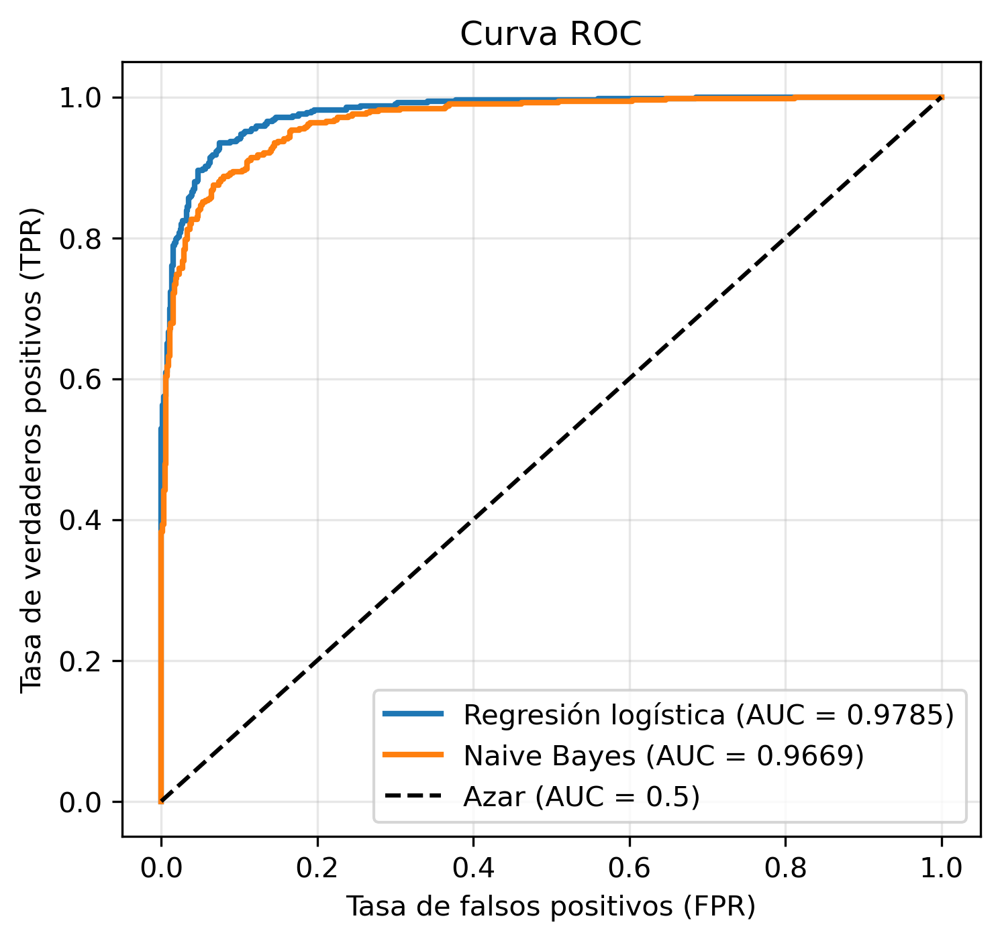
img/fig_roc.pngPega aquí la captura
Regresión logística: AUC = 0.9785. Naive Bayes: AUC = 0.9669. Ambos modelos muestran una alta capacidad discriminativa en el conjunto de prueba; la regresión logística obtiene el AUC mayor.
El AUC debe calcularse con las probabilidades o puntuaciones continuas, no con las clases predichas por predict. Con etiquetas discretas la curva ROC queda reducida a un punto operativo y se pierde información sobre el ordenamiento de los casos.
| Modelo | AUC con probabilidades | AUC con clases |
|---|---|---|
| Regresión logística | 0.9785 | 0.9255 |
| Naive Bayes | 0.9669 | 0.9022 |
Con etiquetas discretas el AUC equivale a la exactitud balanceada,
\[\mathrm{AUC}_{\mathrm{clases}}=\tfrac12\,(\mathrm{TPR}+\mathrm{TNR}),\]que con los valores de la Tabla 12 (Paso 6.3) da 0.9255 y 0.9022.
6.1. Diagnóstico: ¿una ROC pegada a la esquina significa sobreajuste?
Una curva muy pegada a la esquina superior izquierda (AUC cercano a 1) puede indicar un problema, pero también puede significar simplemente que las clases se separan muy bien. La forma de distinguirlo es comparar el AUC en entrenamiento, validación cruzada [4,26] y prueba. Estos son los escenarios posibles y cómo tratarlos:
| Escenario | Qué se observa | Interpretación | Cómo tratarlo |
|---|---|---|---|
| A. Generaliza bien | AUC train ≈ CV ≈ test, todos altos. | Las variables realmente separan las clases. | No requiere corrección; reportar el AUC de prueba y su variabilidad en CV. |
| B. Sobreajuste | AUC train ≫ AUC test (brecha > 0.05 aprox.). | El modelo memoriza el entrenamiento. | Regularizar (menor C en regresión logística), reducir variables correlacionadas, simplificar el modelo, más datos, validación cruzada. |
| C. Fuga de información | AUC ≈ 1.00 en todo, sospechosamente perfecto. | Alguna variable “delata” la etiqueta o el preprocesamiento vio la prueba. | Revisar variables derivadas de la etiqueta y duplicados entre train/test; ajustar escalador y calibrador solo con entrenamiento (Pipeline). |
| D. Subajuste | AUC bajo en train y en test. | Modelo demasiado simple o variables poco informativas. | Agregar variables, modelo más flexible, mejorar la ingeniería de variables. |
| E. Desbalance | ROC alta pero la clase positiva es rara. | La ROC puede ocultar un desempeño pobre en la clase positiva porque la tasa de falsos positivos se diluye entre muchos negativos. | Complementar con curva Precisión-Recall, F1, class_weight="balanced" o remuestreo. |
Los umbrales usados en el código (0.05 para la brecha, 0.70 para subajuste y 0.995 para sospecha de fuga) son reglas prácticas de alerta, no resultados teóricos: se usan como alerta y no como veredicto.
En el entrenamiento se usa validación cruzada estratificada de \(K\) pliegues [4,26],
\[\mathrm{AUC}_{CV}=\frac1K\sum_{r=1}^{K}\mathrm{AUC}_r,\]y se mide la brecha \(\Delta=\mathrm{AUC}_{\text{ent}}-\mathrm{AUC}_{\text{prueba}}\) para detectar sobreajuste (alerta práctica: \(\Delta>0.05\)). La dispersión entre pliegues que se reporta (auc_cv.std()) usa el divisor \(K\), como numpy.std por defecto.
cv5 = StratifiedKFold(n_splits=5, shuffle=True, random_state=42) # 5 pliegues estratificados ([EDITABLE] n_splits)
filas = []
for nombre, modelo in modelos.items():
auc_train = roc_auc_score(y_train, modelo.predict_proba(X_train)[:, 1]) # AUC sobre los datos con que se entrenó
auc_test = roc_auc_score(y_test, modelo.predict_proba(X_test)[:, 1]) # AUC sobre datos no vistos
auc_cv = cross_val_score(modelo, X_train, y_train, cv=cv5, scoring="roc_auc") # AUC en cada pliegue (solo entrenamiento)
brecha = auc_train - auc_test # brecha train - test
# Regla práctica de diagnóstico (umbrales orientativos)
if auc_test < 0.70:
diagnostico = "D. Subajuste"
elif auc_test > 0.995:
diagnostico = "C. Sospecha de fuga de información"
elif brecha > 0.05:
diagnostico = "B. Posible sobreajuste"
else:
diagnostico = "A. Generaliza bien"
filas.append({
"Modelo": nombre,
"AUC train": auc_train,
"AUC CV (media)": auc_cv.mean(),
"AUC CV (desv.)": auc_cv.std(),
"AUC test": auc_test,
"Brecha train-test": brecha,
"Diagnóstico": diagnostico,
})
diag = pd.DataFrame(filas).set_index("Modelo")
diag.round(4)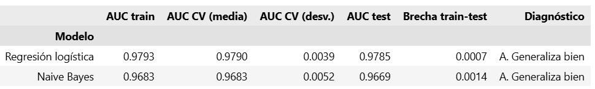
img/salida_diagnostico_tabla.pngPega aquí la captura
# Curvas ROC de entrenamiento (línea punteada) y prueba (línea continua): si casi se superponen, no hay sobreajuste.
fig, ax = plt.subplots(figsize=(5.5, 5))
for (nombre, modelo), color in zip(modelos.items(), ["#4C72B0", "#DD8452"]):
for conjunto, Xc, yc, estilo in [("train", X_train, y_train, "--"), ("test", X_test, y_test, "-")]:
fpr, tpr, _ = roc_curve(yc, modelo.predict_proba(Xc)[:, 1])
ax.plot(fpr, tpr, estilo, color=color, label=f"{nombre} ({conjunto})")
ax.plot([0, 1], [0, 1], "k:", label="Azar")
ax.set_xlabel("FPR"); ax.set_ylabel("TPR"); ax.set_title("ROC: entrenamiento vs. prueba")
ax.legend(loc="lower right", fontsize=8)
fig.savefig("figuras/fig_roc_train_test.png", dpi=300, bbox_inches="tight")
plt.show()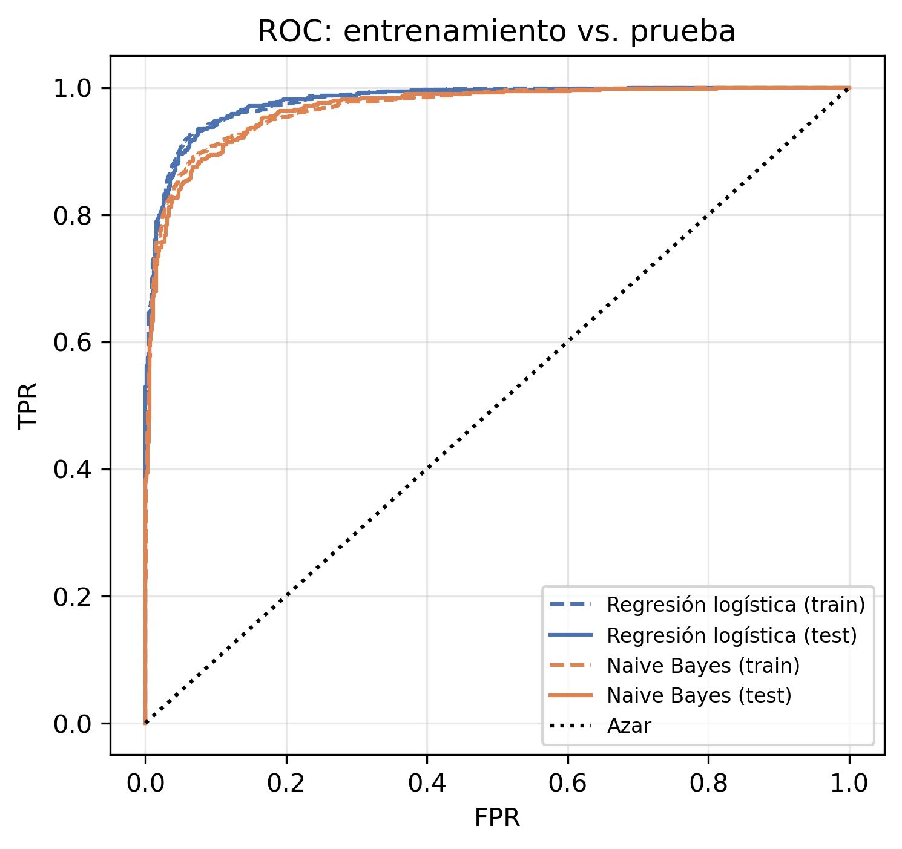
img/fig_roc_train_test.pngPega aquí la captura
Para la regresión logística el AUC es 0.9793 en entrenamiento, 0.9790 ± 0.0039 en validación cruzada (desviación estándar entre los \(K=5\) pliegues, divisor \(K\)) y 0.9785 en prueba (brecha 0.0007, calculada con valores sin redondear); para Naive Bayes, 0.9683, 0.9683 ± 0.0052 y 0.9669 (brecha 0.0014). Ambos modelos caen en el escenario A: las curvas de entrenamiento y prueba casi se superponen, las brechas son mucho menores que 0.05 y la desviación en validación cruzada es pequeña. El AUC alto no se debe a sobreajuste ni a fuga de información, sino a que las variables de tamaño y longitud (Area, Perimeter, Major_Axis_Length) separan bien las variedades.
Si el AUC de entrenamiento y el de prueba son muy parecidos y la desviación en validación cruzada es pequeña, el AUC alto no se debe a sobreajuste. Si la brecha fuera grande, aplica las acciones del escenario B.
6.2. ¿Y si las clases estuvieran desbalanceadas?
Aquí Cammeo representa ≈ 43 %, por lo que no hay desbalance fuerte. Si la clase positiva fuera rara (por ejemplo 2 %), la ROC podría ocultar un desempeño pobre en la clase positiva, porque la tasa de falsos positivos se diluye entre muchos negativos. En ese caso se complementa con la curva Precisión-Recall [19], cuya línea base es la prevalencia de la clase positiva y no 0.5. La precisión promedio (AP) resume esa curva como una suma escalonada,
\[\mathrm{AP}=\sum_{n}(R_n-R_{n-1})\,P_n,\]donde \(P_n\) y \(R_n\) son la precisión y el recall en el \(n\)-ésimo umbral.
prevalencia = y_test.mean() # proporción de Cammeo en prueba = línea base de la curva PR
fig, ax = plt.subplots(figsize=(5.5, 5))
for nombre, p in probs.items():
prec, rec, _ = precision_recall_curve(y_test, p) # precisión y recall para cada umbral
ap = average_precision_score(y_test, p) # AP: suma escalonada de (R_n - R_(n-1)) * P_n
ax.plot(rec, prec, linewidth=2, label=f"{nombre} (AP = {ap:.4f})")
ax.axhline(prevalencia, color="k", linestyle="--", label=f"Línea base = {prevalencia:.2f}")
ax.set_xlabel("Recall (TPR)"); ax.set_ylabel("Precisión"); ax.set_title("Curva Precisión-Recall")
ax.legend(loc="lower left")
fig.savefig("figuras/fig_precision_recall.png", dpi=300, bbox_inches="tight")
plt.show()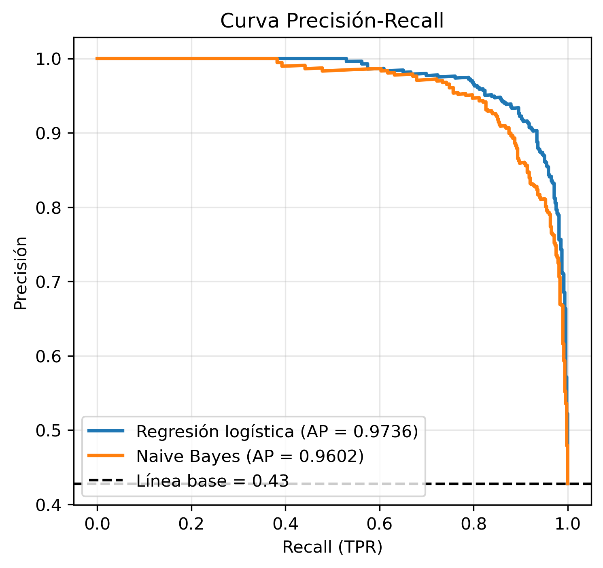
img/fig_precision_recall.pngPega aquí la captura
La precisión promedio (AP) es 0.9736 para la regresión logística y 0.9602 para Naive Bayes, muy por encima de la línea base de 0.43. Con clases casi balanceadas, la curva Precisión-Recall y la ROC cuentan la misma historia: ambos modelos son buenos y la regresión logística es algo mejor.
6.3. Matriz de confusión, precisión y recall
La curva ROC y el AUC evalúan el orden de las probabilidades. Para describir cuántos granos se clasifican bien o mal hay que fijar un umbral de decisión. Aquí se usa 0.5: se predice Cammeo cuando \(P(\text{Cammeo})\ge0.5\), que es lo que hace predict. Con ese umbral se cuentan los aciertos y errores en la matriz de confusión:
| Predicho Cammeo | Predicho Osmancik | |
|---|---|---|
| Real Cammeo | VP | FN |
| Real Osmancik | FP | VN |
Nota: esta tabla pone la clase positiva primero; confusion_matrix de scikit-learn devuelve [[VN, FP], [FN, VP]], por eso el código usa .ravel() en ese orden.
Precisión: cuando el modelo dice “Cammeo”, qué proporción de las veces acierta. Recall (sensibilidad): de los Cammeo reales, qué proporción detecta. Especificidad: de los Osmancik reales, qué proporción reconoce como Osmancik. F1 resume precisión y recall en un solo número.
UMBRAL = 0.5 # [EDITABLE]: umbral de decisión (0.5 es lo que hace predict)
filas = []
for nombre, p in probs.items():
y_pred = (p >= UMBRAL).astype(int) # 1 = Cammeo si P(Cammeo) >= umbral
vn, fp, fn, vp = confusion_matrix(y_test, y_pred).ravel() # sklearn devuelve [[VN, FP], [FN, VP]]
filas.append({
"Modelo": nombre,
"VP": vp, "FP": fp, "FN": fn, "VN": vn,
"Exactitud": (vp + vn) / len(y_test), # aciertos / total
"Precisión": precision_score(y_test, y_pred), # VP / (VP + FP)
"Recall": recall_score(y_test, y_pred), # VP / (VP + FN)
"Especificidad": vn / (vn + fp), # VN / (VN + FP)
"F1": f1_score(y_test, y_pred), # 2VP / (2VP + FP + FN)
})
conf = pd.DataFrame(filas).set_index("Modelo")
conf.round(4)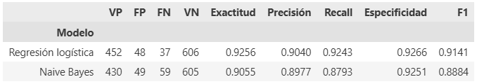
img/salida_matriz_confusion.pngPega aquí la captura
| Modelo | VP | FP | FN | VN | Exact. | Precis. | Recall | Espec. | F1 |
|---|---|---|---|---|---|---|---|---|---|
| Regresión logística | 452 | 48 | 37 | 606 | 0.9256 | 0.9040 | 0.9243 | 0.9266 | 0.9141 |
| Naive Bayes | 430 | 49 | 59 | 605 | 0.9055 | 0.8977 | 0.8793 | 0.9251 | 0.8884 |
La regresión logística comete 85 errores (48 falsos positivos y 37 falsos negativos) y Naive Bayes 108 (49 y 59). Los errores de la regresión logística están parejos: no favorece a una variedad. Naive Bayes comete casi los mismos falsos positivos, pero deja pasar más Cammeo como Osmancik (recall menor, 0.8793 frente a 0.9243).
Si un tipo de error es más costoso, se puede mover UMBRAL: subirlo aumenta la precisión y reduce el recall, y bajarlo hace lo contrario.
Paso 7. Calibración y calidad de las probabilidades
Un modelo está calibrado cuando, para un grupo de observaciones al que asigna probabilidades cercanas a \(p\), la proporción real de positivos también es cercana a \(p\).
Un modelo está perfectamente calibrado si \(P(Y=1\mid\hat p=p)=p\) para todo \(p\in[0,1]\). El diagrama de confiabilidad estima esa relación agrupando las predicciones (7.1). El puntaje de Brier [9] y la pérdida logarítmica (7.2) son reglas de puntuación propias [20]: su valor esperado es mínimo cuando se reportan las probabilidades verdaderas. Evalúan la calidad global de las probabilidades, es decir, combinan discriminación y calibración [21].
7.1. Diagrama de confiabilidad
Se agrupan las predicciones en intervalos. Para cada intervalo \(B_b\) se calcula la probabilidad media predicha y la fracción observada de positivos:
La calibración perfecta corresponde a \(\bar p_b=\bar y_b\), es decir, a los puntos sobre la diagonal.
7.2. Puntaje de Brier y pérdida logarítmica
En ambas métricas, un valor menor indica mejor calidad probabilística.
Brier y log-loss son reglas de puntuación probabilística propias y evalúan la calidad global de las probabilidades; no son medidas exclusivas de calibración. El diagrama de confiabilidad permite examinar directamente la correspondencia entre probabilidad media y frecuencia observada. Además, log_loss recorta las probabilidades a un intervalo \([\varepsilon,1-\varepsilon]\) para evitar \(\ln 0\), de modo que las probabilidades de exactamente 0 o 1 de Naive Bayes producen una pérdida grande pero finita.
def metricas(y_real, p):
# Devuelve un diccionario con las tres métricas para un vector de probabilidades 'p'.
return {
"AUC": roc_auc_score(y_real, p), # discriminación (orden)
"Brier": brier_score_loss(y_real, p), # calidad global de la probabilidad (error cuadrático)
"Log-loss": log_loss(y_real, p), # calidad global (penaliza fuerte la sobreconfianza)
}
tabla = pd.DataFrame({nombre: metricas(y_test, p) for nombre, p in probs.items()}).T.round(4)
tabla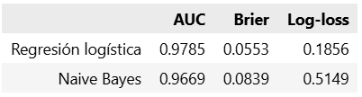
img/salida_metricas_tabla.pngPega aquí la captura
| Modelo | AUC | Brier | Log-loss |
|---|---|---|---|
| Regresión logística | 0.9785 | 0.0553 | 0.1856 |
| Naive Bayes | 0.9669 | 0.0839 | 0.5149 |
Naive Bayes obtiene un AUC alto (0.9669), pero sus probabilidades tienen peor calidad global: Brier 0.0839 frente a 0.0553 y log-loss 0.5149 frente a 0.1856. Una buena capacidad de ordenamiento no garantiza probabilidades confiables.
7.3. Construcción del diagrama
def graficar_confiabilidad(ax, probs, y_real, n_bins=10, titulo="Diagrama de confiabilidad"):
# n_bins: número de grupos en que se dividen las predicciones ([EDITABLE] al llamar la función)
ax.plot([0, 1], [0, 1], "k--", label="Calibración perfecta") # diagonal: predicho = observado
for nombre, p in probs.items():
frac, prob_media = calibration_curve(
y_real, p,
n_bins=n_bins,
strategy="quantile", # cada grupo tiene casi el mismo número de granos
)
# prob_media = probabilidad media predicha del grupo; frac = fracción real de Cammeo en el grupo
ax.plot(prob_media, frac, marker="o", linewidth=2, label=nombre)
ax.set_xlabel("Probabilidad media predicha")
ax.set_ylabel("Fracción real de Cammeo")
ax.set_title(titulo)
ax.legend(loc="upper left")
fig, ax = plt.subplots(figsize=(5.5, 5))
graficar_confiabilidad(ax, probs, y_test)
fig.savefig("figuras/fig_confiabilidad.png", dpi=300, bbox_inches="tight")
plt.show()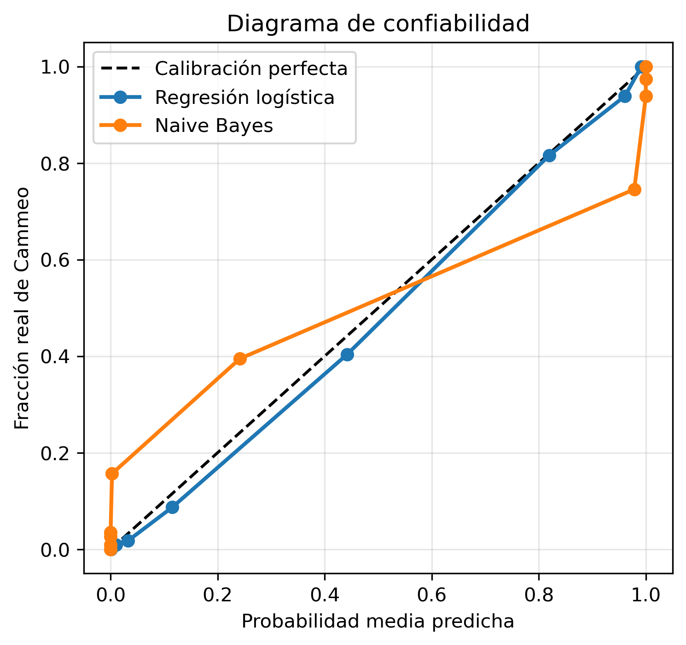
img/fig_confiabilidad.pngPega aquí la captura
Un punto por encima de la diagonal indica que la frecuencia observada de Cammeo es mayor que la probabilidad predicha (el modelo subestima). Un punto por debajo indica que la probabilidad predicha supera la frecuencia observada (el modelo sobreestima). Cada punto resume un grupo de observaciones (del orden de 114 granos por grupo), no un caso individual, y tiene incertidumbre por el tamaño del grupo.
fig, axes = plt.subplots(1, 2, figsize=(10, 3.6), sharey=True) # un histograma por modelo
for ax, (nombre, p) in zip(axes, probs.items()):
ax.hist(p, bins=20, range=(0, 1), color="#4C72B0", edgecolor="white") # distribución de las probabilidades predichas
ax.set_title(nombre)
ax.set_xlabel("Probabilidad predicha de Cammeo")
axes[0].set_ylabel("Número de granos")
fig.tight_layout()
fig.savefig("figuras/fig_hist_probabilidades.png", dpi=300, bbox_inches="tight")
plt.show()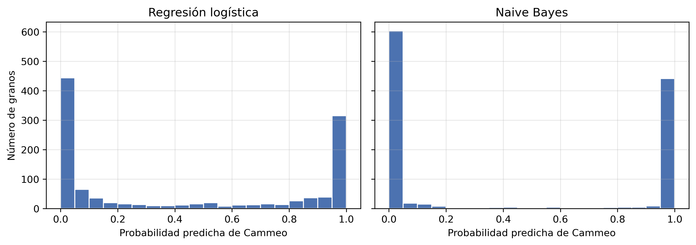
img/fig_hist_probabilidades.pngPega aquí la captura
Las probabilidades de Naive Bayes se concentran marcadamente cerca de 0 y 1 (aproximadamente 9 de cada 10 predicciones, según el histograma), mientras que la regresión logística presenta una distribución más extendida (cerca de 2 de cada 3 en los extremos). La regresión logística sigue casi la diagonal del diagrama de confiabilidad. Naive Bayes se desvía en ambos extremos: en el grupo con probabilidad media cercana a 0 la fracción real de Cammeo es de alrededor de 0.15 (subestima), y en los grupos con probabilidad cercana a 0.98 es de alrededor de 0.75 (sobreestima). Con su log-loss más alto, el patrón es consistente con probabilidades demasiado extremas (sobreconfianza). La conclusión sobre calibración debe apoyarse en el diagrama y no únicamente en el histograma.
Opcionalmente, la imagen de portada se genera con las dos funciones anteriores:
# Imagen de portada: curva ROC y diagrama de confiabilidad lado a lado.
fig, axes = plt.subplots(1, 2, figsize=(10, 4.2))
graficar_roc(axes[0], probs, y_test)
graficar_confiabilidad(axes[1], probs, y_test)
fig.tight_layout()
fig.savefig("figuras/portada_roc_calibracion.png", dpi=300, bbox_inches="tight") # guarda la imagen en figuras/
plt.show()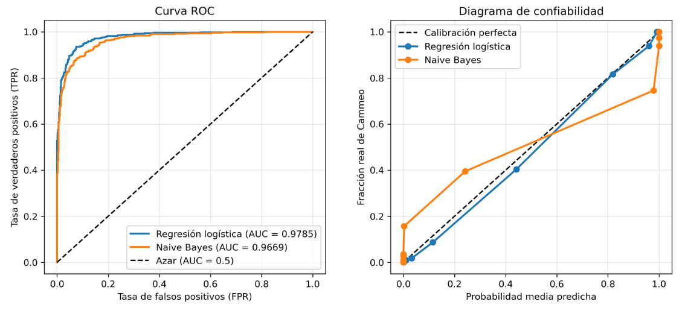
img/portada_roc_calibracion.pngPega aquí la captura
Paso 8. Recalibrar los modelos
La recalibración ajusta una función que transforma las puntuaciones del clasificador en probabilidades mejor ajustadas a las frecuencias observadas. Se prueban dos métodos:
- Platt o sigmoide: ajusta una curva en forma de “S”; es simple y estable con pocos datos.
- Isotónico: ajusta una función no decreciente por tramos, más flexible; puede sobreajustar si la muestra de calibración es pequeña.
Sea \(q(x)\) la puntuación del clasificador. El método de Platt [10] (method="sigmoid") ajusta una sigmoide
con \(A\) y \(B\) estimados por máxima verosimilitud con datos no usados para entrenar. La regresión isotónica [11,23,24] (method="isotonic") ajusta una función no decreciente \(g\) por mínimos cuadrados,
que se resuelve con el algoritmo de pares adyacentes violadores (PAV) [25]; es más flexible, pero puede sobreajustar con pocos datos. Con validación cruzada (\(K=5\)) el clasificador final combina los estimadores calibrados de los pliegues, por lo que el AUC puede cambiar ligeramente.
En CalibratedClassifierCV, la validación cruzada se realiza dentro del conjunto de entrenamiento. El conjunto de prueba se reserva para la evaluación final.
metodos = [("sigmoid", "Platt"), ("isotonic", "Isotónica")] # (nombre interno de sklearn, etiqueta para mostrar)
calibrados = {}
for nombre, modelo in modelos.items():
for metodo, etiqueta in metodos:
calibrador = CalibratedClassifierCV(
modelo, # clasificador base (se clona y se reentrena en cada pliegue)
method=metodo, # 'sigmoid' (Platt) o 'isotonic'
cv=5, # [EDITABLE] número de pliegues de validación cruzada
)
calibrador.fit(X_train, y_train) # entrena modelo + calibrador SOLO con entrenamiento
calibrados[f"{nombre} + {etiqueta}"] = calibrador.predict_proba(X_test)[:, 1] # probabilidades corregidas en pruebaCon cinco pliegues, los datos de entrenamiento se dividen en cinco partes. En cada iteración, una parte se usa para ajustar la función de calibración con predicciones obtenidas fuera del ajuste de ese estimador. Así se evita calibrar sobre las mismas observaciones usadas para entrenar cada estimador. El conjunto de prueba no participa en el ajuste.
En la configuración utilizada, el clasificador calibrado combina estimadores de los distintos pliegues. Por ello el AUC puede cambiar ligeramente después de calibrar (por ejemplo, de 0.9669 a 0.9663 en Naive Bayes con calibración isotónica); no debe afirmarse que permanece idéntico. Otra causa es que la función escalonada isotónica introduce empates en las puntuaciones, y el AUC solo es invariante ante transformaciones estrictamente crecientes.
Cuando el clasificador base no tiene decision_function, como GaussianNB, CalibratedClassifierCV aplica la sigmoide de Platt sobre \(\hat p\in[0,1]\) y no sobre un logit (comportamiento de las versiones recientes de scikit-learn; verifícalo con la versión que imprime el Paso 1). Una sigmoide \(1/(1+e^{Aq+B})\) evaluada en \(q\in[0,1]\) no alcanza \(0\) ni \(1\), lo que explica que las probabilidades de Naive Bayes con Platt se agrupen cerca de \(0.07\) y \(0.92\) en el diagrama de confiabilidad recalibrado y que Platt mejore menos que la isotónica. Con pliegues de calibración de unos 530 granos, la isotónica queda cerca del límite en que puede sobreajustar [11].
8.1. Comparación antes y después
todas = {}
for nombre in modelos:
todas[f"{nombre} (original)"] = probs[nombre] # versión sin recalibrar
for _, etiqueta in metodos:
todas[f"{nombre} + {etiqueta}"] = calibrados[f"{nombre} + {etiqueta}"] # versiones recalibradas
tabla_final = pd.DataFrame({nombre: metricas(y_test, p) for nombre, p in todas.items()}).T.round(4)
tabla_final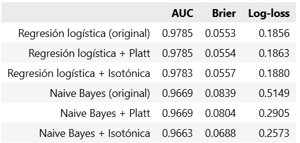
img/salida_tabla_final.pngPega aquí la captura
| Modelo | AUC | Brier | Log-loss |
|---|---|---|---|
| Logística original | 0.9785 | 0.0553 | 0.1856 |
| Logística + Platt | 0.9785 | 0.0554 | 0.1863 |
| Logística + Isotónica | 0.9783 | 0.0557 | 0.1880 |
| Naive Bayes original | 0.9669 | 0.0839 | 0.5149 |
| Naive Bayes + Platt | 0.9669 | 0.0804 | 0.2905 |
| Naive Bayes + Isotónica | 0.9663 | 0.0688 | 0.2573 |
fig, axes = plt.subplots(1, 2, figsize=(11, 4.8), sharey=True) # un panel por modelo
for ax, nombre in zip(axes, modelos):
grupo = {f"{nombre} (original)": probs[nombre]}
grupo.update({f"{nombre} + {et}": calibrados[f"{nombre} + {et}"] for _, et in metodos})
graficar_confiabilidad(ax, grupo, y_test, titulo=nombre)
fig.tight_layout()
fig.savefig("figuras/fig_recalibracion.png", dpi=300, bbox_inches="tight")
plt.show()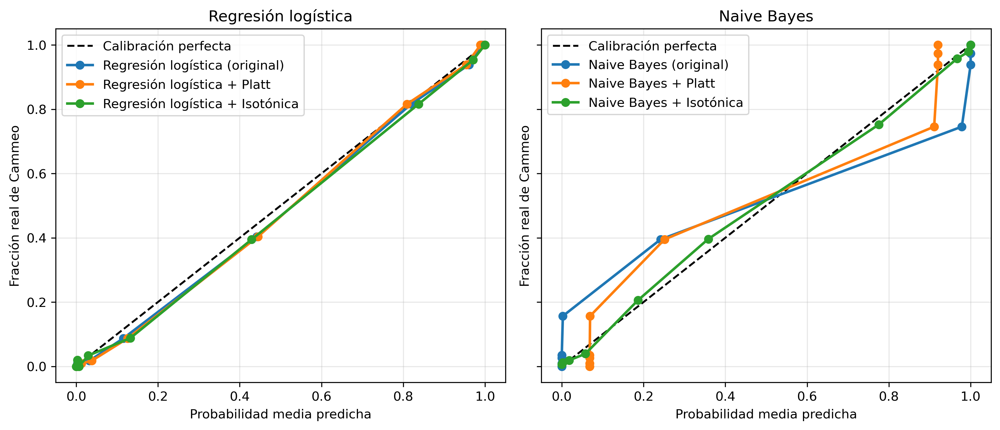
img/fig_recalibracion.pngPega aquí la captura
En este conjunto de prueba, la regresión logística no mejora sus métricas Brier y log-loss después de recalibrar (Brier 0.0553 frente a 0.0554 con Platt y 0.0557 con isotónica). En cambio, Naive Bayes presenta una reducción importante de ambas pérdidas, especialmente con calibración isotónica: el Brier baja de 0.0839 a 0.0688 y el log-loss de 0.5149 a 0.2573. La recalibración no garantiza una mejora universal: su utilidad depende del modelo, los datos y el procedimiento de validación.
6. Cómo presentar tu reporte de este tipo de análisis
Después de ejecutar el código, el siguiente paso es comunicar los resultados. Un reporte profesional de un análisis de clasificación con evaluación de probabilidades debe permitir que otra persona entienda el problema, reproduzca el procedimiento y verifique las conclusiones. Se recomienda esta estructura:
| Sección | Qué debe contener |
|---|---|
| Portada | Logos de la institución, título, autores, asignatura y fecha. |
| Resumen | Problema, método, resultado principal y conclusión en 5 a 8 líneas. |
| Problema y objetivo | Qué se quiere predecir y por qué importa evaluar tanto discriminación como calibración. |
| Datos | Fuente, número de observaciones, descripción de variables y calidad (faltantes, duplicados, balance). |
| Metodología | Partición, preprocesamiento, modelos utilizados (regresión logística, Naive Bayes), métricas y pruebas estadísticas. |
| Resultados | Tablas y gráficas con su explicación: prueba de hipótesis, ROC/AUC, diagnóstico de sobreajuste, confiabilidad, Brier y log-loss. |
| Discusión | Qué significan los resultados, limitaciones y posibles explicaciones. |
| Conclusiones y recomendaciones | Respuesta al objetivo y acciones sugeridas. |
| Referencias y anexos | Citas del conjunto de datos y código. |
Plantilla base del reporte
La siguiente plantilla muestra el diseño de la primera página de un reporte con logos e institución. Sustituye los recuadros por los logos y completa los datos.
Modelado Predictivo para la Ciencia de DatosLogo ESCOM
Título del reporte
Problema observado: describe en una línea qué se quiere predecir.
Equipo / autores: nombres.
Grupo: grupo.
Lugar de trabajo / institución: institución y unidad académica.
Fecha: dd de mes de aaaa.
Para cada resultado sigue el patrón: figura o tabla → qué se observa → qué significa. Incluye las capturas o gráficas de las salidas del código, indica los modelos utilizados y cierra con las conclusiones. Evita pegar salidas sin explicación.
7. Análisis de resultados
Esta sección ofrece una vista general de los resultados observados en el conjunto de prueba (1 143 granos: 489 Cammeo y 654 Osmancik) y los interpreta de forma cuantitativa y cualitativa antes de formular las conclusiones.
| Aspecto | Regresión logística | Naive Bayes | Lectura |
|---|---|---|---|
| Exactitud | 0.9256 | 0.9055 | Ambos superan 0.90. |
| Precisión / recall | 0.9040 / 0.9243 | 0.8977 / 0.8793 | La diferencia está en el recall. |
| Especificidad / F1 | 0.9266 / 0.9141 | 0.9251 / 0.8884 | Logística mejor en todas. |
| Errores (FP + FN) | 85 (48 + 37) | 108 (49 + 59) | Naive Bayes falla más en Cammeo. |
| AUC (ROC) | 0.9785 | 0.9669 | Discriminación muy alta en ambos. |
| Precisión promedio (AP) | 0.9736 | 0.9602 | Coincide con la ROC. |
| AUC train / CV / test | 0.9793 / 0.9790 / 0.9785 | 0.9683 / 0.9683 / 0.9669 | Sin sobreajuste (escenario A). |
| Brier / log-loss | 0.0553 / 0.1856 | 0.0839 / 0.5149 | Naive Bayes, peor calibrado. |
| Brier / log-loss con isotónica | 0.0557 / 0.1880 | 0.0688 / 0.2573 | Recalibrar ayuda a Naive Bayes. |
Análisis cuantitativo
Datos. Las clases están razonablemente balanceadas (57.2 % y 42.8 %) y no hay valores faltantes ni duplicados. La prueba de hipótesis rechaza la igualdad de medias en las siete variables, pero con efecto grande en seis (|d| de 0.81 a 2.98) y pequeño en Extent (|d| = 0.24): las variables de tamaño y longitud son las más informativas.
Clasificación. Con umbral 0.5, la regresión logística acierta 1 058 de 1 143 granos (92.56 %) y Naive Bayes 1 035 (90.55 %). La diferencia de 23 errores se debe casi por completo a los falsos negativos (59 frente a 37), pues los falsos positivos son prácticamente iguales (49 y 48).
Discriminación. Los AUC (0.9785 y 0.9669) y las precisiones promedio (0.9736 y 0.9602) cuentan la misma historia. Calcular el AUC con clases en lugar de probabilidades lo reduce a 0.9255 y 0.9022, lo que muestra la información que se pierde al fijar un umbral.
Sobreajuste. Las brechas entre entrenamiento y prueba son de 0.0007 y 0.0014 y las desviaciones en validación cruzada de 0.0039 y 0.0052: ambos modelos generalizan.
Calidad de las probabilidades. Frente a la regresión logística, Naive Bayes tiene un Brier cerca de 52 % mayor (0.0839 frente a 0.0553) y un log-loss casi tres veces mayor (0.5149 frente a 0.1856).
Recalibración. En Naive Bayes, la calibración isotónica reduce el Brier alrededor de 18 % (a 0.0688) y el log-loss alrededor de 50 % (a 0.2573); Platt lo reduce alrededor de 4 % y 44 %. En la regresión logística no hay mejora (Brier 0.0553 frente a 0.0557). Aun recalibrado, Naive Bayes no alcanza a la regresión logística original.
Análisis cualitativo y comportamiento de los modelos
Ambos ordenan bien, pero no igual de confiables. Con AUC similares (0.9785 y 0.9669), la diferencia entre los modelos aparece en la calibración, no en el orden.
Regresión logística. Sus probabilidades están más repartidas en el intervalo [0, 1] y siguen casi la diagonal del diagrama de confiabilidad; sus errores son parejos entre ambas variedades.
Naive Bayes. Concentra la mayoría de sus predicciones cerca de 0 y 1 y es sobreconfiado en ambos extremos: con probabilidad cercana a 0 se observa alrededor de 15 % de Cammeo, y con probabilidad cercana a 0.98 solo alrededor de 75 %. Ejemplos de la Tabla de probabilidades: asigna 0.7875 a un Osmancik (grano 1) y 0.0194 a un Cammeo (grano 4), mientras que la regresión logística asigna 0.0724 y 0.1811.
Explicación probable. Las variables de tamaño están correlacionadas (0.90 a 1.00), lo que contradice el supuesto de independencia condicional de Naive Bayes; la suma de log-verosimilitudes cuenta varias veces la misma evidencia y es consistente con las probabilidades extremas observadas [22].
Errores, limitaciones y aspectos relevantes
Errores. Se concentran en los granos donde las variedades se parecen (traslape de Extent, Eccentricity y Minor_Axis_Length). El log-loss de Naive Bayes está dominado por unos pocos errores cometidos con probabilidad casi 0 o casi 1, que se penalizan muy fuerte.
Una sola partición. Los resultados provienen de una partición 70/30; diferencias muy pequeñas (por ejemplo Brier 0.0553 frente a 0.0557) no deben interpretarse como mejoras o empeoramientos.
Umbral fijo. Exactitud, precisión y recall corresponden a un umbral de 0.5; con otro umbral cambia el equilibrio entre falsos positivos y falsos negativos.
Alcance. Solo hay dos variedades, imágenes capturadas en condiciones controladas y siete medidas morfológicas ya extraídas; no se sabe cómo se comportaría el modelo con otras cosechas o cámaras.
8. Conclusiones
Las conclusiones se basan en los resultados del conjunto de prueba: 1 143 granos que no se usaron para entrenar ni para calibrar.
¿Se alcanzó el objetivo?
| Criterio | Regresión logística | Naive Bayes | ¿Se cumple? |
|---|---|---|---|
| Exactitud ≥ 0.90 | 0.9256 | 0.9055 | Sí, en ambos. |
| AUC ≥ 0.95 | 0.9785 | 0.9669 | Sí, en ambos. |
| Brecha de AUC ≤ 0.05 | 0.0007 | 0.0014 | Sí, en ambos. |
| Probabilidades confiables | Brier 0.0553; curva cercana a la diagonal | Brier 0.0839; sobreconfiado | Solo la regresión logística; Naive Bayes requiere recalibración. |
Sí se alcanzó el objetivo. Con la regresión logística se obtiene un clasificador que distingue las variedades con alta exactitud y probabilidades confiables; Naive Bayes cumple los criterios de clasificación, pero sus probabilidades solo son utilizables después de recalibrarlas.
Principales hallazgos
- La regresión logística clasifica con una precisión de 0.904 y un recall de 0.924. De los 500 granos que marcó como Cammeo, 452 lo eran (precisión); de los 489 Cammeo reales, detectó 452 (recall). Su exactitud es 0.9256 (1 058 aciertos de 1 143), su especificidad 0.927 y su F1 0.914. Cometió 85 errores (7.4 %), repartidos casi por igual entre falsos positivos (48) y falsos negativos (37), por lo que no favorece a ninguna variedad.
- Naive Bayes describe los datos peor: exactitud 0.9055, precisión 0.898, recall 0.879 y F1 0.888, con 108 errores (9.4 %). Su debilidad está en el recall: deja pasar 59 granos Cammeo como Osmancik.
- Ambos modelos ordenan muy bien los granos (AUC de 0.9785 y 0.9669) y no presentan sobreajuste, lo que confirma que las medidas morfológicas contienen información suficiente para separar las variedades. La regresión logística supera a Naive Bayes en todas las métricas de clasificación.
- La calibración distingue a los modelos más que el AUC. La regresión logística tiene probabilidades confiables (Brier 0.0553 y log-loss 0.1856). Naive Bayes es sobreconfiado, con probabilidades pegadas a 0 y a 1 (Brier 0.0839 y log-loss 0.5149): con probabilidad cercana a 0 se observa cerca de 15 % de Cammeo y con probabilidad cercana a 0.98 solo cerca de 75 %.
- La recalibración ayuda a Naive Bayes, no a la regresión logística. Con calibración isotónica, el log-loss de Naive Bayes baja de 0.5149 a 0.2573 y su Brier de 0.0839 a 0.0688; la regresión logística no mejora (Brier 0.0553 frente a 0.0557). Aun recalibrado, Naive Bayes no supera a la regresión logística original.
La regresión logística describe bien los datos: clasifica correctamente alrededor de 93 de cada 100 granos, con una precisión cercana a 90 % y un recall cercano a 92 %, y además entrega probabilidades confiables sin necesidad de recalibrarlas. Naive Bayes ordena bien, pero su desempeño de clasificación es menor y sus probabilidades requieren recalibración antes de interpretarse como tales.
Limitaciones de la solución
- Una sola partición 70/30, sin intervalos de confianza para las métricas de prueba ni una prueba formal de la diferencia de AUC entre modelos (p. ej., DeLong [18]).
- Solo dos variedades, medidas ya extraídas de imágenes en condiciones controladas y un umbral fijo de 0.5.
- Solo dos modelos con supuestos fuertes: frontera lineal en el logit en la regresión logística e, en Naive Bayes, independencia condicional y densidades normales (con frontera de decisión cuadrática).
Mejoras propuestas y su justificación técnica
| Mejora | Justificación |
|---|---|
| Reducir o transformar las variables de tamaño (selección de variables, PCA o mayor regularización) | Area, Perimeter, Major_Axis_Length y Convex_Area tienen correlaciones de 0.90 a 1.00: hay información redundante que dificulta interpretar los coeficientes y viola el supuesto de Naive Bayes. |
| Probar modelos no lineales (árboles, bosques aleatorios, SVM o boosting) y luego recalibrarlos | Los 85 errores de la regresión logística (7.4 %) se concentran donde las variedades se traslapan; una frontera más flexible podría reducirlos, y la recalibración corregiría sus probabilidades. |
| Validación cruzada repetida con intervalos de confianza y prueba de DeLong [18] | Los resultados vienen de una sola partición; las desviaciones en validación cruzada (0.0039 y 0.0052) y diferencias de Brier tan pequeñas como 0.0004 indican que hace falta cuantificar la variabilidad. |
| Elegir el umbral según el costo de cada error | Con 0.5 los errores de la regresión logística están parejos (48 y 37); si confundir una variedad es más costoso, conviene mover el umbral usando las curvas ROC y Precisión-Recall. |
| Usar Naive Bayes solo recalibrado, o sustituir las densidades normales por estimaciones no paramétricas | Su log-loss baja de 0.5149 a 0.2573 al recalibrarlo, lo que confirma que el problema está en las probabilidades y no en el orden. |
| Ampliar los datos (otras cosechas, cámaras y variedades) | Los resultados provienen de un solo conjunto en condiciones controladas; es necesario comprobar que el modelo generaliza fuera de ellas. |
Aprendizajes metodológicos
- El AUC mide discriminación y es invariante ante transformaciones estrictamente crecientes de las puntuaciones; la calibración se evalúa con el diagrama de confiabilidad.
- Brier y log-loss evalúan la calidad global de las probabilidades (no son medidas exclusivas de calibración); valores menores indican mejor desempeño.
- La exactitud, la precisión y el recall dependen del umbral elegido; el AUC no.
9. Recomendaciones para reproducir el tutorial
- Ruta del archivo: coloca el ARFF en la carpeta de trabajo, junto al notebook, o indica su ruta completa en la variable
RUTA_ARFF. - Librerías y versiones: ejecuta la celda de instalación del Paso 0 si falta alguna biblioteca (
%pip install scikit-learn scipy pandas numpy matplotlib) y anota las versiones que imprime el Paso 1. - Etiquetas: el ARFF entrega bytes; conviértelos con
df["Class"].str.decode("utf-8"). - Imágenes: el notebook guarda todas las gráficas en la carpeta
figuras/; en esta página cópialas aimg/. - AUC: calcúlalo con las probabilidades de
predict_proba, no con las etiquetas depredict. - Preprocesamiento: ajústalo solo con entrenamiento (usa
Pipeline) y reserva el conjunto de prueba para la evaluación final. - Interpretación de métricas: distingue discriminación (AUC) de calibración (confiabilidad, Brier, log-loss) y presenta Brier y log-loss como medidas de la calidad global de las probabilidades.
- AUC muy alto: compara entrenamiento, validación cruzada y prueba (Paso 6.1) antes de concluir que existe sobreajuste.
- Pruebas de hipótesis: reporta siempre el valor \(p_{\mathrm{val}}\) y el tamaño del efecto.
10. Referencias
Las referencias se citan entre corchetes en el texto: [1] y [2] en el problema y los datos, [3] en los prerrequisitos y [4] a [26] en el fundamento matemático de los Pasos 2.3, 4, 6, 6.1, 6.2, 7 y 8.
- Cinar, I. y Koklu, M. (2019). Classification of Rice Varieties Using Artificial Intelligence Methods. International Journal of Intelligent Systems and Applications in Engineering, 7(3), 188–194. doi:10.18201/ijisae.2019355381
- Cinar, I. y Koklu, M. (2019). Rice (Cammeo and Osmancik) [Conjunto de datos]. UCI Machine Learning Repository. doi:10.24432/C5MW4Z
- Pedregosa, F., Varoquaux, G., Gramfort, A., Michel, V., Thirion, B., Grisel, O., et al. (2011). Scikit-learn: Machine Learning in Python. Journal of Machine Learning Research, 12, 2825–2830.
- Hastie, T., Tibshirani, R. y Friedman, J. (2009). The Elements of Statistical Learning: Data Mining, Inference, and Prediction (2.ª ed.). Springer.
- Hosmer, D. W., Lemeshow, S. y Sturdivant, R. X. (2013). Applied Logistic Regression (3.ª ed.). Wiley.
- Welch, B. L. (1947). The generalization of “Student’s” problem when several different population variances are involved. Biometrika, 34(1–2), 28–35.
- Cohen, J. (1988). Statistical Power Analysis for the Behavioral Sciences (2.ª ed.). Lawrence Erlbaum Associates.
- Fawcett, T. (2006). An introduction to ROC analysis. Pattern Recognition Letters, 27(8), 861–874.
- Brier, G. W. (1950). Verification of forecasts expressed in terms of probability. Monthly Weather Review, 78(1), 1–3.
- Platt, J. C. (1999). Probabilistic outputs for support vector machines and comparisons to regularized likelihood methods. En A. J. Smola et al. (Eds.), Advances in Large Margin Classifiers (pp. 61–74). MIT Press.
- Niculescu-Mizil, A. y Caruana, R. (2005). Predicting good probabilities with supervised learning. Proceedings of the 22nd International Conference on Machine Learning, 625–632.
- Fisher, R. A. (1925). Statistical Methods for Research Workers. Oliver and Boyd.
- Dunn, O. J. (1961). Multiple comparisons among means. Journal of the American Statistical Association.
- Holm, S. (1979). A simple sequentially rejective multiple test procedure. Scandinavian Journal of Statistics.
- Cox, D. R. (1958). The regression analysis of binary sequences. Journal of the Royal Statistical Society: Series B.
- Delacre, M., Lakens, D. y Leys, C. (2017). Why psychologists should by default use Welch’s t-test instead of Student’s t-test. International Review of Social Psychology.
- Hanley, J. A. y McNeil, B. J. (1982). The meaning and use of the area under a receiver operating characteristic (ROC) curve. Radiology.
- DeLong, E. R., DeLong, D. M. y Clarke-Pearson, D. L. (1988). Comparing the areas under two or more correlated receiver operating characteristic curves: a nonparametric approach. Biometrics.
- Davis, J. y Goadrich, M. (2006). The relationship between Precision-Recall and ROC curves. Proceedings of the International Conference on Machine Learning (ICML).
- Gneiting, T. y Raftery, A. E. (2007). Strictly proper scoring rules, prediction, and estimation. Journal of the American Statistical Association.
- Murphy, A. H. (1973). A new vector partition of the probability score. Journal of Applied Meteorology.
- Domingos, P. y Pazzani, M. (1997). On the optimality of the simple Bayesian classifier under zero-one loss. Machine Learning.
- Zadrozny, B. y Elkan, C. (2001). Obtaining calibrated probability estimates from decision trees and naive Bayesian classifiers. Proceedings of the International Conference on Machine Learning (ICML).
- Zadrozny, B. y Elkan, C. (2002). Transforming classifier scores into accurate multiclass probability estimates. Proceedings of the ACM SIGKDD International Conference on Knowledge Discovery and Data Mining.
- Ayer, M., Brunk, H. D., Ewing, G. M., Reid, W. T. y Silverman, E. (1955). An empirical distribution function for sampling with incomplete information. Annals of Mathematical Statistics.
- Kohavi, R. (1995). A study of cross-validation and bootstrap for accuracy estimation and model selection. Proceedings of the International Joint Conference on Artificial Intelligence (IJCAI).
A. Lista de imágenes para esta página
Todas las imágenes viven en la carpeta img/ (extensión .png). Las figuras (fig_*, distribucion_variables y la portada) las genera el notebook con fig.savefig("figuras/<nombre>.png"); copia los archivos a img/ con el mismo nombre. Las capturas (salida_*) se toman de la salida de cada celda. Mientras una imagen no exista, la página muestra un recuadro punteado como espacio reservado.
| Archivo (img/) | Contenido | Origen |
|---|---|---|
distribucion_variables.png | Gráfica de barras de granos por variedad. | savefig (Paso 1) |
fig_histogramas.png | Histogramas por variedad. | savefig (Paso 2.1) |
fig_boxplot.png | Diagramas de caja. | savefig (Paso 2.2) |
fig_correlacion.png | Matriz de correlación. | savefig (Paso 2.2) |
fig_roc.png | Curva ROC. | savefig (Paso 6) |
fig_roc_train_test.png | ROC de entrenamiento vs. prueba. | savefig (Paso 6.1) |
fig_precision_recall.png | Curva Precisión-Recall. | savefig (Paso 6.2) |
fig_confiabilidad.png | Diagrama de confiabilidad (modelos originales). | savefig (Paso 7.3) |
fig_hist_probabilidades.png | Histogramas de probabilidades predichas. | savefig (Paso 7.3) |
fig_recalibracion.png | Confiabilidad antes y después de recalibrar. | savefig (Paso 8.1) |
portada_roc_calibracion.png | Imagen de portada: ROC y diagrama de confiabilidad juntos. | savefig (Paso 7.3, opcional) |
Salida_01_carga.png | Salida de la celda de carga (shape y head). | Captura (Paso 1) |
salida_02_info_describe.png | Salida de info() y describe(). | Captura (Paso 2) |
salida_hipotesis_tabla.png | Tabla de la prueba de hipótesis. | Captura (Paso 2.3) |
salida_particion.png | Salida de la partición train/test. | Captura (Paso 3) |
salida_exactitud.png | Exactitud de los dos modelos. | Captura (Paso 4) |
salida_probabilidades.png | Tabla de las primeras 8 probabilidades. | Captura (Paso 5) |
salida_diagnostico_tabla.png | Tabla de diagnóstico train/CV/test. | Captura (Paso 6.1) |
salida_matriz_confusion.png | Matriz de confusión y métricas de clasificación. | Captura (Paso 6.3) |
salida_metricas_tabla.png | Tabla AUC, Brier y log-loss. | Captura (Paso 7) |
salida_tabla_final.png | Tabla final con calibración. | Captura (Paso 8.1) |
grano_morfologia.png | Foto del grano con las medidas señaladas. | Imagen externa |
logo_ipn, logo_escom.png | Logos para la plantilla del reporte (opcionales). | Imagen externa |